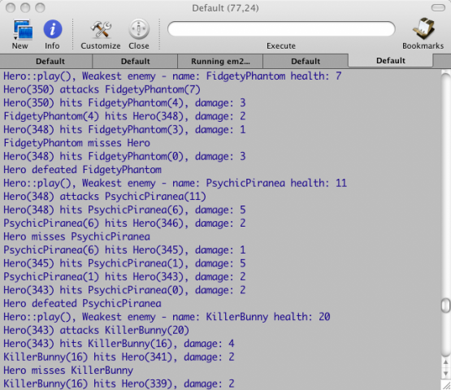

编写跨平台插件框架
讨论使用 C/C++ 语言开发跨平台的插件框架所需要的架构、开发方法以及部署。我们将以一个简单的角色扮演游戏为例，来说明我们的插件框架。在该游戏中，我们利用插件来添加 NPC。游戏引擎加载插件，集成其内容。我们将从分析现有插件/组件系统开始，一步步深入了解如何开发插件框架，以及很多需要注意的问题，比如二进制兼容性等，我们将开发出一套具有工业强度的插件框架，可以运行在 Windows、Linux、OSX 等主流操作系统之上，并且可以很容易地移植到其他操作系统平台。这个插件框架相对于其他已有的系统具有一些独特的属性，并且灵活易用，兼顾 C 和 C++，提供多种部署方式（动态库和静态库）
插件的好处
如果你要开发成功的、动态的系统，插件是最有效的方法之一。基于插件的系统具有很好的可扩展性，可以说是当前技术条件下最有效的一种安全扩展现有系统的解决方案。插件允许第三方开发者为系统添加有价值的东西，允许本系统开发者在不改变核心功能的条件下增加新的功能。插件提供了一种机制，可以分离相互独立的概念、隐藏实现细节、易于测试，还有很多其他的好处。
比如Eclipse平台，就是典型的插件系统。它的功能全部由插件提供，其核心功能可以看做一个插件加载器。 Eclipse IDE 本身（包括 UI 和 Java 开发环境）都是以插件挂载到核心框架的形式实现。
为什么选择 C++？
在插件开发方面，C++ 可谓臭名昭著。C++ 极大地依赖于平台特性和编译器特性。C++ 标准没有指定应用程序二进制接口（Application Binary Interface, ABI），这意味着，使用不同编译器，甚至同一编译器的不同版本来编译 C++ 库，都有可能是不兼容的。基于以上事实，C++ 本身根本没有动态加载的概念。那些所谓的“动态加载”，都是各个平台提供的自己的解决方案（显然是互不兼容的）。现在，你就需要建立起这么一个概念。不过，现在有很多重量级的解决方案解决了这一问题，不仅仅是插件机制，而且增加了很多运行时支持。
说了这么多 C++ 的不好，有一点我们不可否认，C/C++ 至今仍然是开发高效系统的首选语言。因此，我们需要使用 C++ 实现插件机制。很多时候，这是我们无法绕过的。
已经有什么解决方案？
在开发我们的新插件框架之前，我们最好看一下现在已有的库或者框架。
现在既有重量级的解决方案，比如 Microsoft 的 COM 和 Mozilla 的 XPCOM (Cross-platform COM)，也有仅提供了基本功能的，比如 Qt 的插件系统和其他一些轻量级 C++ 库。其中一个库是 DynObj，它的目标是消除二进制兼容性问题（基于一些限制）。还有一个类库由 Daveed Vandervoorde 开发，试图向 C++ 提供原生的插件概念。这篇文章读起来很有趣，但是感觉很奇怪。
不过，上面所说的这些轻量级解决方案都没有解决很多创建工业强度的插件系统所必须面对的问题，比如错误处理、数据类型、版本以及框架代码和应用程序代码的分离等。
二进制兼容性问题
再次强调一句，现在没有标准的 C++ ABI。这意味着，不同编译器（甚至同一编译器的不同版本）会编译出不同的目标文件和库。这个问题导致的最显而易见的问题就是，不同编译器会使用不同的名称改写算法。所谓名称改写（name mangling），意思是，在目标文件符号表中和连接过程中使用的名字，通常和编译目标文件的源程序中使用的名字不一样，为了进行匹配，编译器需要将目标源文件中的名字进行调整。名称改写并不是 C++ 所特有的，例如，我们在汇编 C 语言时经常看到的以下划线 _ 开头的函数名，其实就是 C 编译器将函数名进行了名称改写。但是在 C++ 中，名称改写要复杂得多，因为 C++ 中支持 overload 和 override。名称改写的存在意味着，通常来说，你只能使用完全一致的编译器（同一编译器的同一版本）来链接 C++ 目标文件和库。许多编译器甚至从 C++ 98 标准起就没有完整实现。
不过，我们也有很多办法来解决这个问题。例如，如果你仅仅通过虚指针去访问 C++ 对象，仅仅调用虚函数，那么就不存在这个问题。但是，这种方法并不值得推荐，因为即使是虚表，不同编译器生成的内存中的格式也是不一致的，虽然这比名称改写的区别要小得多。
如果你试图动态加载 C++ 代码，你就要面对另外一个问题：在 Linux 或者 OS X 平台，没有直接的方法加载和实例化 C++ 类（Windows 平台下 Visual C++ 支持）！这个问题的解决方案是，使用 C 风格的函数（避免 C++ 编译器的名称改写）作为工厂函数，返回一个不透明的句柄。调用者获取该句柄后，将其转换成适合的类（通常是纯虚基类）。当然，这要求一些额外的操作，同时，也要求编译器在编译库和应用程序时，需要在内存中建立一致的虚表。
终极解决方案是，忘记 C++，完全使用 C API。所有的 C 编译器都有一致的实现，也就是全部兼容。在后面的内容中，我们将讨论，如何在底层 C++ 代码之上建立 C 的兼容性。
基于插件的系统架构
一个基于插件的系统可以分成三部分：
- 特定领域系统，也就是业务相关的部分
- 插件管理器
- 插件
特定领域系统（主系统）通过插件管理器加载和创建插件对象。插件对象创建完成后，主系统就持有该对象的指针或者引用，就可以像其它对象一样使用该对象。通常，我们还需要执行一些特殊的销毁、清理工作。
插件管理器通常是一段通用代码。它用于管理插件的生命周期，将插件暴露给主系统。它能够发现、加载插件，执行初始化操作，注册工厂函数，也能够卸载插件。另外，它还应该能够允许主系统遍历已加载或者已注册的插件。
插件需要符合插件管理器的协议，为主系统提供所需要的对象。
在实际系统中，很少见到相对独立的清理工作（当然是在基于 C++ 的插件系统中）。插件管理器通常与特定领域系统绑定在一起。理由是，插件管理器需要提供特定类型的插件的实例。这些类型需要定义在主系统中。另外，插件的初始化操作一般需要主系统的特定信息，也可能需要回调某些函数或服务。这些操作都很难由完全独立的插件管理器去完成。
插件部署模型
插件通常以动态链接库的形式部署。动态链接库有很多好处，例如热切换（无需停止系统即可重新加载新的实现），由第三方开发者提供安全扩展（无需修改系统即可增加功能）和更短的链接时间。但是，也有一些情景是静态库更适合的。例如，有些系统根本不支持动态链接库（许多嵌入式系统都是这样的）。另外，基于安全原因，有些系统不允许加载外部代码。有时，核心系统需要预加载一些额外的插件，那么，使用静态链接的形式无疑更加健壮（这样的话，用户就不能随便删除这些文件了）。
最后，一个好的插件系统应当同时支持动态链接和静态链接的插件。这可以让你在不同的环境、不同的要求下使用同一套插件系统。
插件编程接口
所谓插件，其实就是基于接口的设计。基于插件的系统最基本的一点就是，要有一个中心系统，用于加载未知的插件，并且能够使用预先定义好的接口和协议与这些插件进行交互。
最基本的方式是定义一个接口，提供一系列插件（动态的或者是静态）需要暴露出的函数。这种实现从技术上说是可行的，但实际并不那么简单地操作。原因在于，一个插件需要支持两类接口，但是却只能暴露出一个接口的函数集。这意味着，两类接口必须混合在一起。
第一个接口（协议）是通用插件接口。该接口允许中心系统初始化插件，能够将插件提供的用于创建、销毁对象的函数注册给中心系统。这个通用插件接口不是特定领域相关的，因此能够作为一个可复用库。第二个接口则是插件对象提供的功能接口。这个接口是与特定领域相关的，必须被仔细地设计，并且由插件实际实现。中心系统应当利用这个接口与插件对象进行交互。
下面我们给出一个通用插件接口的头文件。这里，我们不会深究细节，仅仅为了有个相对直观地认识。
#ifndef PF_PLUGIN_H
#define PF_PLUGIN_H
#include <apr-1/apr_general.h>
#ifdef __cplusplus
extern "C" {
#endif
typedef enum PF_ProgrammingLanguage
{
PF_ProgrammingLanguage_C,
PF_ProgrammingLanguage_CPP,
} PF_ProgrammingLanguage;
struct PF_PlatformServices_;
typedef struct PF_ObjectParams
{
const apr_byte_t * objectType;
const struct PF_PlatformServices_ * platformServices;
} PF_ObjectParams;
typedef struct PF_PluginAPI_Version
{
apr_int32_t major;
apr_int32_t minor;
} PF_PluginAPI_Version;
typedef void * (*PF_CreateFunc)(PF_ObjectParams *);
typedef apr_int32_t (*PF_DestroyFunc)(void *);
typedef struct PF_RegisterParams
{
PF_PluginAPI_Version version;
PF_CreateFunc createFunc;
PF_DestroyFunc destroyFunc;
PF_ProgrammingLanguage programmingLanguage;
} PF_RegisterParams;
typedef apr_int32_t (*PF_RegisterFunc)(const apr_byte_t * nodeType,
const PF_RegisterParams * params);
typedef apr_int32_t (*PF_InvokeServiceFunc)(const apr_byte_t * serviceName,
void * serviceParams);
typedef struct PF_PlatformServices
{
PF_PluginAPI_Version version;
PF_RegisterFunc registerObject;
PF_InvokeServiceFunc invokeService;
} PF_PlatformServices;
typedef apr_int32_t (*PF_ExitFunc)();
typedef PF_ExitFunc (*PF_InitFunc)(const PF_PlatformServices *);
#ifndef PLUGIN_API
#ifdef WIN32
#define PLUGIN_API __declspec(dllimport)
#else
#define PLUGIN_API
#endif
#endif
extern
#ifdef __cplusplus
"C"
#endif
PLUGIN_API PF_ExitFunc PF_initPlugin(const PF_PlatformServices * params);
#ifdef __cplusplus
}
#endif
#endif /* PF_PLUGIN_H */
你需要认识到的第一件事是，这是一个C 头文件。这就允许我们的插件框架能够被纯C 系统编译和使用，并且能够编写纯C 插件。但是，这么做并不会限定必须使用C，实际上，它已经被设计为更常用C++ 来实现。
PF_ProgrammingLanguage枚举允许插件告诉插件管理器，它本身是由 C 还是 C++ 实现的。
PF_ObjectParams是一个抽象结构，在创建插件对象时被传入。
PF_PluginAPI_Version用于指明版本信息。这有助于插件管理器只加载兼容版本的插件。
函数指针PF_CreateFunc和PF_DestroyFunc必须由插件实现，用于插件管理器创建和销毁插件对象。
PF_RegisterParams结构包含了插件必须提供给插件管理器的所有信息，以便插件管理器初始化插件（版本，创建、销毁函数以及开发语言）。
PF_RegisterFunc函数指针（由插件管理器实现）允许每个插件将其支持的对象类型以PF_RegisterParams结构的形式注册给插件管理器。注意，这种实现允许插件注册不同版本的对象，以及注册多个对象类型。
PF_InvokeService函数指针是一个通用函数，允许插件调用主系统提供的各种服务，例如日志、事件处理或者错误报告等。该函数要求有一个服务名称以及一个指向参数结构的不透明的指针。插件应当知道可用的服务以及如何调用它们（或者实现一种服务发现机制）。
PF_PlatformServices结构用于表示平台提供的所有服务（版本、已注册对象和调用函数）。该结构会在插件初始化的时候传给每一个插件。
PF_ExitFunc是插件退出函数的指针，由插件实现。
PF_InitFunc是插件初始化的函数指针。
PF_initPlugin是动态插件（也就是通过动态链接库或者共享库部署的插件）初始化函数的实际声明。它由动态插件暴露出，所以插件管理器可以在加载插件时进行调用。它有一个指向PF_PlatformServices结构的指针，所以在插件初始化时，这些服务都是可以调用的（这正是注册对象的理想时机），函数返回退出函数的指针。
而对于静态插件（由静态链接库实现，并且直接与主应用程序链接的插件）应该实现init函数，但是不能命名为PF_initPlugin。原因是，如果有多个静态插件，它们不能有相同的名字的函数。
静态插件的初始化过程有所不同。它们必须由主程序显式地进行初始化，也就是通过PF_InitFunc调用其初始化函数。这实际是不好的设计，因为如果要新增或者删除静态插件，主应用的代码都必须修改，并且那些不同名字的init函数都必须能够找到。
有一个叫做“自动注册auto-registration”的技术试图解决这个问题。自动注册由一个静态库的全局对象实现。该对象会在main()函数执行之前构造完成。这个全局对象能够请求插件管理器初始化静态插件（通过传递插件init()函数的指针来完成）。不幸的是，在某些版本的 Visual C++ 中，这种技术并不支持。
编写插件
如何编写插件？我们的插件框架提供了最通用的功能，在目前的条件下很难添加能够与主应用交互的插件。所以，你必须再次插件框架的基础之上构建自己的应用程序对象。这意味着，你的应用程序（加载插件的）连同插件本身，都必须遵守同一个交互模型。通常这代表，应用程序需要插件提供特定类型的对象，用于暴露某些特定的API。插件框架提供所有必须的公共基础代码，用于插件的注册、枚举以及加载。
下面的例子是 C++ 接口定义的IActor。这个接口有两个操作：getInitialInfo()和play()。注意，这个接口并不足以应付所有情况，因为getInitialInfo()函数需要一个指向ActorInfo结构的指针，而play()则需要另外一个接口ITurn的指针。这是经常遇见的情况，你必须这么设计，并且指定一个特定的对象模型。
struct IActor
{
virtual ~IActor() {}
virtual void getInitialInfo(ActorInfo * info) = 0;
virtual void play( ITurn * turnInfo) = 0;
};
每个插件都可以注册IActor接口的多个实现。当应用程序决定实例化一个由插件注册的对象时，它就调用由插件实现的PF_CreateFunc函数。插件就会做出响应，创建对象并返回给应用程序。函数返回值是void *，因为对象的创建操作是通用插件框架的一部分，因此并不知道任何关于特定的IActor接口的信息。应用程序负责将void *转换成IActor *，然后像其他对象一样通过接口调用其函数。当应用程序使用完IActor对象时，会调用注册的PF_DestroyFunc函数，插件就销毁该对象。至于为什么需要有虚析构函数，我们会在以后的讨论中介绍。
编程语言的支持
在前面的章节中，我们已经了解到，如果你能够使用编译器令应用程序和插件的虚表匹配，那么就可以保持C++ 虚表级别的兼容性；或者你可以使用C 级别的兼容性，然后就能使用不用的编译器去构建系统，但其限制在于你只能编写纯C 应用。这样的话，你就不能够使用前面我们在例子IActor 中看到的那种优雅的C++ 接口。
纯 C 实现
在纯 C 的编程模型中，你只能使用 C 开发插件。当实现PF_CreateFunc函数时，需要返回一个 C 对象同应用程序的 C 对象模型进行交互。
但是，我们知道，C 语言是一个过程语言，没有对象的概念。那么，刚刚提到的C 对象和 C 对象模型是怎么回事呢？为了理解这一点，我们必须认识到，C 语言已经提供了足够多的抽象机制来实现对象、引入多态（这一点在我们的插件框架中尤其重要）以及支持面向对象风格的编程。事实上，原始的C++ 编译器就是一个C 编译器的前端。它将C++ 代码翻译成 C 代码，然后直接输出给一个普通的 C 编译器（当然，我们说的是“原始的”C++ 编译器）。它的名字就叫 Cfront 这已经足够说明问题了。
核心技术是，使用包含函数指针的结构体。每个函数声明的第一个参数都应该是指向本结构体的指针。这个结构体也可能包含其他数据成员。也就是说，我们使用结构体模拟了C++ 的类，提供了封装（在一个地方保存状态和行为）、继承（通过将父结构体作为第一个数据成员实现）和多态（通过设置不同的函数指针实现）。
C 不支持析构函数、函数和运算符的重载以及命名空间，所以在定义接口时，我们能够设置的选项极为有限。这可能有点因祸得福，因为那些掌握了C++ 语言不同子集的人们都明白使用接口，而不一定了解析构函数、运算符重载那些机制。减少接口的语言结构上的限制，有助于简化接口，提高可用性。
在下面的章节中，我们将讨论面向对象的C 语言设计。下面是我们的简单游戏的C 对象模型的实现。如果你快速浏览一遍，你会发现它甚至支持集合类型和对象遍历器。
#ifndef C_OBJECT_MODEL
#define C_OBJECT_MODEL
#include <apr-1/apr.h>
#define MAX_STR 64 /* max string length of string fields */
typedef struct C_ActorInfo_
{
apr_uint32_t id;
apr_byte_t name[MAX_STR];
apr_uint32_t location_x;
apr_uint32_t location_y;
apr_uint32_t health;
apr_uint32_t attack;
apr_uint32_t defense;
apr_uint32_t damage;
apr_uint32_t movement;
} C_ActorInfo;
typedef struct C_ActorInfoIteratorHandle_ { char c; } * C_ActorInfoIteratorHandle;
typedef struct C_ActorInfoIterator_
{
void (*reset)(C_ActorInfoIteratorHandle handle);
C_ActorInfo * (*next)(C_ActorInfoIteratorHandle handle);
C_ActorInfoIteratorHandle handle;
} C_ActorInfoIterator;
typedef struct C_TurnHandle_ { char c; } * C_TurnHandle;
typedef struct C_Turn_
{
C_ActorInfo * (*getSelfInfo)(C_TurnHandle handle);
C_ActorInfoIterator * (*getFriends)(C_TurnHandle handle);
C_ActorInfoIterator * (*getFoes)(C_TurnHandle handle);
void (*move)(C_TurnHandle handle, apr_uint32_t x, apr_uint32_t y);
void (*attack)(C_TurnHandle handle, apr_uint32_t id);
C_TurnHandle handle;
} C_Turn;
typedef struct C_ActorHandle_ { char c; } * C_ActorHandle;
typedef struct C_Actor_
{
void (*getInitialInfo)(C_ActorHandle handle, C_ActorInfo * info);
void (*play)(C_ActorHandle handle, C_Turn * turn);
C_ActorHandle handle;
} C_Actor;
#endif
纯 C++ 实现
在纯C++ 编程模型中，你需要使用C++ 开发插件。插件的接口函数可以由static 成员函数实现，或者是普通的static、全局函数（毕竟，C++ 简单来说就是 C 的超集）。此时，我们的对象模型就可以是普通 C++ 对象模型。下面的代码是同一游戏的 C++ 对象模型的实现。它和前面的 C 对象模型几乎是一样的。
#ifndef OBJECT_MODEL
#define OBJECT_MODEL
#include "c_object_model.h"
typedef C_ActorInfo ActorInfo;
struct IActorInfoIterator
{
virtual void reset() = 0;
virtual ActorInfo * next() = 0;
};
struct ITurn
{
virtual ActorInfo * getSelfInfo() = 0;
virtual IActorInfoIterator * getFriends() = 0;
virtual IActorInfoIterator * getFoes() = 0;
virtual void move(apr_uint32_t x, apr_uint32_t y) = 0;
virtual void attack(apr_uint32_t id) = 0;
};
struct IActor
{
virtual ~IActor() {}
virtual void getInitialInfo(ActorInfo * info) = 0;
virtual void play( ITurn * turnInfo) = 0;
};
#endif
同时提供 C/C++
在同时提供C/C++ 的编程模型中，我们既可以使用C 语言开发插件，也可以使用C++。当向系统注册插件时，我们必须指明到底是C 对象还是 C++ 对象。当你创建一个平台时，这一技术无疑非常有用，因为你不应该限制第三方开发人员必须使用哪种语言。
我们的插件框架支持这种编程模型，但是真正的工作应当由应用程序去完成。每种对象类型都必须同时实现C 接口和 C++ 接口。这意味着，你会有一个含有虚表的 C++ 类，还会有一个指向虚表中函数的指针的集合。这种机制并不那么重要，我们会在后面的游戏开发中具体演示。
注意，从插件开发者的角度来看，混合C/C++ 模型不会增加任何额外的复杂度。插件开发者通常会使用C 接口或者 C++ 接口来开发 C 或者 C++ 插件。
混合使用 C/C++
在混合使用C/C++ 的编程模型中，我们可以使用C++ 开发插件，但是需要基于C 对象模型。这种机制需要引入C++ 包装类，用于实现C++ 对象模型，但是要包装成C 对象。插件开发者需要自己处理这一层，在C 和 C++ 之间来回翻译每一个调用、参数以及返回值。这意味着，你需要在应用程序对象模型之上做更多工作，但是通常这些工作都很直接。这样做的好处是，能够让插件开发者使用方便的C++ 编程模型，同时拥有C 级别的兼容性。我们会在后面的章节中再次回到这个问题上来。
语言对比
下面我们给出两种语言（C 和 C++）、两种部署方式（动态、静态）的对比。
C++ |
C |
|
静态 |
最好的性能 API 简单 易于调试 可以使用任何现代 C++ 编译器 在不支持动态库的系统上的唯一选择 避免 DLL 陷阱 要求整个系统的源代码兼容 |
没有使用的；适用于仅支持 C 编译器、不支持动态库的系统 |
动态 |
较好的性能 API 简单 易于调试 必须使用虚表兼容的编译器（不是完全的 ABI 兼容） 新版本的应用程序使用的编译器虚表结构改变，就会导致兼容性问题 目标系统要求支持动态库 |
同时具有 C 和 C++ API 笨重 调试困难 可以使用任何编译器发布 更新编译器版本无影响 目标系统要求支持动态库 |
我们讨论的目的是认识到，在同时支持C/C++ 的模型中，如果使用C++ 编写插件，系统将得益于，也会受限于C++；如果使用 C 编写插件，系统则得益于，也会受限于 C。而在混合 C/C++ 模型中，系统仅受到 C 的影响，因为 C++ 那层完全隐藏在插件实现之下了。初看起来，这有点复杂，但是至少你有机会做出选择，而且插件系统允许你自己选择最合适的实现方式。这并不会强制你使用某一种编程模型，也不会要求去找一个最小公分母。我们只需看清二者的差别，选择最合适的方式。
在前面的文章中，我们讨论了问题的细节、多种解决方案，最后大体引入了插件框架。下面，我们将继续架构的描述、插件生命周期的管理以及插件框架的具体实现细节。注意，我们的代码可能仅仅是接口层次的，不会涉及更深入的实现。
基于插件系统的架构
基于插件的系统可以分成三个部分，这三个部分都是松散耦合的：使用其对象模型的主系统或主应用程序，插件管理器和插件。插件需要符合插件管理器的接口和协议，并且需要实现对象模型接口。
我们使用一个例子来说明。假设主系统是一个回合制游戏。游戏中的战场有多种怪物。我们的游戏主角要同怪物战斗，直到主角死掉或者所有的怪物都死掉。这个游戏很简单，但是还算好玩（希望你这么觉得;-P）。下面是我们游戏主角的类：
#ifndef HERO_H
#define HERO_H
#include <vector>
#include <map>
#include <boost/shared_ptr.hpp>
#include "object_model/object_model.h"
class Hero : public IActor
{
public:
Hero();
~Hero();
// IActor methods
virtual void getInitialInfo(ActorInfo * info);
virtual void play(ITurn * turnInfo);
private:
};
#endif
BattleManager是驱动游戏的引擎，主要用于管理主角、怪物的实例，以及战场上的相关信息。在每一轮中，它都要调用每个角色（主角和怪物）的的play()函数。
主角和怪物类都实现IActor接口。主角是一个游戏内建对象，具有预定义的行为。而怪物则是由插件实现。这就允许游戏很方便地添加新的怪物类型。PluginManager负责从插件加载怪物，然后将其转换成BattleManager类能够识别的类型。这种结构也允许使用静态插件添加内建的怪物。BattleManager甚至根本不需要知道还有插件这么个东西。它应该仅仅操作 C++ 对象模型。这也使得它更容易测试，因为你可以直接在测试代码中创建mock 怪物，而不需要非得加载插件。
PluginManager本身可以是通用的，也可以是特定于本系统的。一个通用的插件管理器不需要关心底层的对象模型。当一个C++ 的PluginManager实例化插件中提供的对象时，它必须返回一个通用接口。调用者则需要将这个通用接口强制转换成对象模型中所需要的接口。尽管这有点丑陋，但是是必须的。而一个特定系统的PluginManager则知道你的对象模型，因此能够操作底层对象模型。例如，一个专门给我们的游戏定义的PluginManager可以有一个CreateMonster()函数，返回IActor接口。后面我们将展示的PluginManager是一个通用版本，但是我们也会探讨，如何将一个通用设计的插件管理器转换成特定系统的。这通常是一种最佳实践，因为我们当然希望能够尽可能多的减少强制类型转换。
插件系统生命周期
现在是时候了解插件系统的生命周期了。主系统，PluginManager和插件本身都需要遵循严格的协议。一个设计良好的通用插件框架完全可以很好地管理这个生命周期。应用程序可以在需要的时候直接访问插件，仅仅通过几个简单的函数调用。
注册静态插件
静态插件是由静态库部署，直接静态链接到系统中的。通过在静态库中定义一个全局的注册对象，其构造函数能够自动调用，就可以实现静态插件的自动注册。不幸的是，这种技术并不是在所有平台都有效（例如Windows 平台）。另外的方法是，通过传入插件的init()函数，显式令PluginManager初始化静态插件。因此，所有链接到主系统的静态插件的init()函数（必须包含 PF_InitPlugin声明）的名字都不能相同。一个比较合理的规则是使用类似<Plugin Name>_InitPlugin()这种名字。下面是名为StaticPlugin 的静态插件的init()函数名：
extern "C" PF_ExitFunc
StaticPlugin_InitPlugin(const PF_PlatformServices * params);
这种显式初始化将主系统和静态插件紧紧耦合在一起，因为主系统需要在编译时“知道”哪些插件有链接，这样才能进行初始化操作。如果所有的静态插件都可以遵循某种约定，那么我们就可以设计成让应用程序自动发现这些插件，然后动态生成初始化的代码，因此完全可以做成自动构建。
一旦静态插件的init()函数调用完毕，该插件就已经将其所有对象类型注册到了PluginManager。
加载动态插件
动态插件当然更常见。动态插件应该都部署在一个专门的目录中。应用程序应该调用PluginManager的loadAll()函数，同时要将这个目录的路径传过去。PluginManager需要扫描该目录中的所有文件，然后将每一个动态链接库加载进来。如果系统需要细粒度地控制插件加载，程序可能还需要另外调用load()函数。
插件初始化
一旦动态库已经成功加载，PluginManager就要寻找预先定义好的PF_initPlugin函数入口点。如果找到，则传入PF_PlatformServices结构调用该函数，初始化插件。该结构体包含了PF_PluginAPI_Version字段，可以让插件平台了解到版本信息，决定是否可以正确初始化。如果应用程序版本和插件版本不兼容，插件就不能完成初始化。PluginManager应当记录下这一点，同时继续加载下一个插件。从PluginManager的角度看，一个插件加载失败或者初始化失败，不应该算是一个严重错误。在遍历已加载插件时，应用程序也许需要做额外的检查，验证哪些插件缺失了。
下面我们给出 C++ 插件的PF_initPlugin函数的实现：
#include "cpp_plugin.h"
#include "plugin_framework/plugin.h"
#include "KillerBunny.h"
#include "StationarySatan.h"
extern "C" PLUGIN_API apr_int32_t ExitFunc()
{
return 0;
}
extern "C" PLUGIN_API PF_ExitFunc PF_initPlugin(const PF_PlatformServices * params)
{
int res = 0;
PF_RegisterParams rp;
rp.version.major = 1;
rp.version.minor = 0;
rp.programmingLanguage = PF_ProgrammingLanguage_CPP;
// Regiater KillerBunny
rp.createFunc = KillerBunny::create;
rp.destroyFunc = KillerBunny::destroy;
res = params->registerObject((const apr_byte_t *)"KillerBunny", &rp);
if (res < 0)
return NULL;
// Regiater StationarySatan
rp.createFunc = StationarySatan::create;
rp.destroyFunc = StationarySatan::destroy;
res = params->registerObject((const apr_byte_t *)"StationarySatan", &rp);
if (res < 0)
return NULL;
return ExitFunc;
}
注册对象
现在，球已经在插件手上了（在PF_initPlugin中）。如果版本正确，插件管理器应当已经注册了所有支持的对象类型。注册的目的是提供类似PF_CreateFunc和PF_DestroyFunc这样的函数，以便以后用于创建和销毁插件对象。这种安排允许插件自己控制所管理对象的实际创建和销毁操作，包括资源管理等（如内存），而由应用程序控制所有的对象及其生命周期。当然，插件也可能使用单例模式，始终返回相同的对象实例。
完成注册，需要为每一个对象类型准备注册记录（PF_RegisterParams），调用在 PF_PlatformServices结构体（该结构体通过PF_initPlugin传入）中定义的registerObject()函数指针。registerObject()函数接受一个字符串，作为对象类型的唯一标识符，或者是星号（*），同时还需要提供PF_RegisterParams结构。我们会在后面讨论为什么需要这个字符串。这个类型字符串之所以需要，是因为插件可能支持多种类型的对象。
在上一节的代码中，我们注册了两种怪物类型：”KillerBunny” 和“StationarySatan”。
现在，鞋已经在脚上了，准备起跑吧！一旦插件调用过registerObject()函数，控制权就回到PluginManager手上。PF_RegisterParams还包含了一个版本号和编程语言的类型。版本号允许PluginManager确定它是否能够处理该对象类型。如果版本号不匹配，则该对象就不会注册。这并不会成为一个致命错误。这种设计允许程序拥有充分的灵活性，插件可以尝试注册同一对象类型的多种版本，以便在兼容旧版本的情况下使用新接口的优点。我们将在后面的章节中解释编程语言类型的作用。如果插件管理器发现了合适的PF_RegisterParams结构，它只需简单地将其保存为一个内部数据，使用一个对象类型和PF_RegisterParams的散列表。
当插件注册过所有的对象类型，它会返回一个指向PF_ExitFunc的函数指针。这个函数将会在插件卸载之前被调用，目的是让插件能够清理其生命周期内用到的全局资源。
如果插件发现它不能正确工作（可能是因为某些资源没有获取，可能是因为注册对象类型失败或者版本不对等），应当及时清理并返回NULL。这让PluginManager能够知道插件初始化失败。PluginManager就会移除该插件注册的所有内容。
由应用程序创建插件对象
当运行到这一步时，所有动态插件都已经加载完成，所有静态插件和动态插件都已经初始化完毕，并且将其支持的对象类型注册完成。应用程序现在可以使用PluginManager的createObject()函数创建插件对象。这个函数需要一个对象类型字符串和一个IObjectAdapter接口。我们会在下一节讨论这个接口，现在先来看看这个对象类型字符串。
应用程序需要知道支持哪些对象类型。这种信息可以硬编码到应用程序中，也可以由程序自己去查询插件管理器维护的映射表，在运行时找出已经注册了哪些对象类型。
回忆一下，类型字符串可以是一个唯一的字符串，也可以是“*”。当应用程序使用类型字符串（“*”是一个无效对象类型）调用createBbject()函数时，PluginManager查询其注册表，看有没有这么一种对象类型。如果存在，则调用已经注册的PF_CreateFunc函数，将结果返回给应用程序（通常会以适配的形式）。如果没有找到，则遍历所有以“*”注册的插件，然后调用其PF_CreateFunc函数。如果插件返回非 NULL 指针，则将其返回给应用程序。
那么，提供“*”的目的是什么？简单来说，就是允许插件创建在注册时并不知道的对象。这是什么意思？在 Numenta（译注：原作者所在公司），我们使用这种技术支持 Python 插件：一个使用“*”类型字符串的单独的 C++ 插件。如果应用程序请求 Python 类（其类型是一个 Python 类的完全限定类名），那么，这个嵌入了 Python 解释器的 C++ 插件会创建一个特殊的对象，用于持有该 Python 类的实例，并且将对插件的请求操作转发给内部的 Python 对象（通过 Python C API）。这样从外部看来，就完全是一个标准的 C++ 对象了。这就带来了极大的灵活，因为我们可以在系统运行时加载一个Python 类，这个 Python 类立即可用。
自动适配 C 对象
现在我们又回到那个问题：让插件框架同时支持C 插件和 C++ 插件。C 和 C++ 插件对象实现了不同的接口。下面我们将讨论如何设计和实现同时支持C/C++ 对象模型的系统。这种统一的T对象模型可以同时支持 C 和 C++ 的对象访问。但是，如果应用程序需要使用两套独立的代码去处理两种插件，显然是不方便的。应用程序代码应该避免 if 语句，也应该避免大量的强制类型转换。我们的插件框架可以使用两种技术来解决这些问题：
1.对象模型包括 C 和 C++ 两种对象；
2.C 对象使用一个特殊的适配器包装，将其接口暴露为对应的C++ 接口。这样做的结果是完全屏蔽 C 插件的差异性，当做 C++ 对象处理。
我们使用对象适配器来实现这种适配。这是一种由应用程序提供的，实现了IObjectAdapter接口的对象（其实就是一个由插件框架提供的ObjectAdapter模板）。下面的代码展示了IObjectAdapter接口和ObjectAdapter对象。
#ifndef OBJECT_ADAPTER_H
#define OBJECT_ADAPTER_H
#include "plugin_framework/plugin.h"
// 该接口用于将 C 插件对象适配成 C++ 插件对象。
// 必须传递给 PluginManager::createObject() 函数。
struct IObjectAdapter
{
virtual ~IObjectAdapter() {}
virtual void * adapt(void * object, PF_DestroyFunc df) = 0;
};
// 该模板需要在同时支持 C/C++ 对象设计的模式下使用。
// 否则，你需要提供自己的实现了 IObjectAdapter 接口的对象适配器。
template<typename T, typename U>
struct ObjectAdapter : public IObjectAdapter
{
virtual void * adapt(void * object, PF_DestroyFunc df)
{
return new T((U *)object, df);
}
};
#endif // OBJECT_ADAPTER_H
PluginManager使用这个对象将C 对象适配成 C++ 对象。我们会在后面的章节中详细解释这个问题。
需要注意的是，插件框架提供了所有必须的基础接口，用于将C 对象适配成 C++ 对象，但是仍然需要应用程序的帮助，因为它并不知道自己需要适配的对象类型。
应用程序同插件对象的交互
应用程序只需要调用它创建的插件对象的C++ 接口（有可能是C 接口适配而来）的C++ 成员函数。为了忠实地从成员函数返回值，插件对象可能需要调用PlatformServices结构的PF_InvokeService函数。这些服务可以提供诸如日志、错误处理、长时间操作的进度通知以及事件处理。当然，这些回调函数是应用程序与插件的协议，属于完整的应用程序接口和对象模型设计的一部分。
由应用程序析构插件对象
管理对象生命周期的最佳实践是，谁创建谁销毁。这对于C++ 这样的语言尤其重要，因为你必须自己管理内存分配和释放。我们有很多方法去分配和释放内存：malloc/free，new/delete，数组的 new/delete，操作系统提供的不同堆的分配、释放的特殊 API 等。同时，使用与分配函数相对应的释放函数也是很重要的。创建者就是获取资源如何分配的最好的位置。在插件框架中，每一个对象类型都会注册创建函数和销毁函数（PF_CreateFunc和PF_DestroyFunc）。插件对象由PF_CreateFunc函数创建，就应该由PF_DestroyFunc函数销毁。每个插件都应该维护自己需要的资源的分配和释放。插件可以自由选择使用的内存模型。所有的插件对象可能都会静态分配内存，此时，PF_DestroyFunc无需做任何操作。或者，插件会维护一个预创建对象的对象池，PF_DestroyFunc函数只需要将对象放入该对象池。应用程序使用PF_CreateFunc创建对象，使用PF_DestroyFunc销毁对象。C++ 插件对象的析构函数会正确调用，所以应用程序不需要特意直接调用PF_DestroyFunc函数，只需调用标准的 delete 运算符即可。这种技术同样适用于适配的 C 对象，因为对象适配器保证在析构函数中调用PF_DestroyFunc。
在应用程序关闭时清理插件系统
当应用程序退出时，需要销毁其创建的所有插件对象，并且通知所有插件（静态的和动态的）去清理自身。应用程序通过调用PluginManager的shutdown()函数达到这一目的。PluginManager会调用每个插件的PF_ExitFunc函数（该函数指针会由PF_initPlugin函数返回），卸载所有动态插件。
当应用程序准备退出，插件持有的内存自动归还时，也需要调用这种退出函数。原因是可能有一些资源不会被自动回收，同时插件可能会保留着一些缓存状态，例如数据库提交、网络发送等。幸运的是，这些都是由PluginManager管理的，应用程序无需关心。
在某些情况下，应用程序可能仅仅需要卸载一个插件。此时，退出函数必须调用，插件本身卸载掉（如果是动态插件的话），并且要从PluginManager的内部数据中移除。
插件系统组件
接下来若干章节主要描述通用插件框架的主组件及其作用。
DynamicLibrary
DynamicLibrary组件是一个简单的跨平台C++ 类。它使用dlopen/dlclose/dlsym 系统调用（UNIX 以及 OS X）和LoadLibrary/FreeLibrary/GetProcAddress API 调用（Windows）。
下面是DynamicLibrary的头文件：
#ifndef DYNAMIC_LIBRARY_H
#define DYNAMIC_LIBRARY_H
#include <string>
class DynamicLibrary
{
public:
static DynamicLibrary * load(const std::string & path,
std::string &errorString);
~DynamicLibrary();
void * getSymbol(const std::string & name);
private:
DynamicLibrary();
DynamicLibrary(void * handle);
DynamicLibrary(const DynamicLibrary &);
private:
void * handle_;
};
#endif
每个动态库都是一个DynamicLibrary类的实例。加载动态库会调用静态的load()函数。如果一切正常，该函数返回一个DynamicLibrary指针，否则返回 NULL。输出参数errorString包含错误信息（如果有的话）。由于各个平台上面对于动态加载的机制都有不同，所以会将用于表示这个已加载完毕的库的平台相关的句柄保存下来，因此可以在以后获取符号已经卸载。
getSymbol()函数用于从已加载库中获取符号以及用于卸载库所需的析构函数（delete 指针）。
有许多不同方法用于加载动态库。为简单起见，DynamicLibrary在每一平台上只选择一种方法。当然，我们也可以进行扩展，但是这么一来，不同平台需要提供不同接口，我们的代码就不会很简单了。
PluginManager
PluginManager是插件框架的核心。与插件相关的所有事情都要通过PluginManager解决。下面我们给出PluginManager的头文件：
#ifndef PLUGIN_MANAGER_H
#define PLUGIN_MANAGER_H
#include <vector>
#include <map>
#include <apr-1/apr.h>
#include <boost/shared_ptr.hpp>
#include "plugin_framework/plugin.h"
class DynamicLibrary;
struct IObjectAdapter;
class PluginManager
{
typedef
std::map<std::string, boost::shared_ptr<DynamicLibrary> > DynamicLibraryMap;
typedef std::vector<PF_ExitFunc> ExitFuncVec;
typedef std::vector<PF_RegisterParams> RegistrationVec;
public:
typedef std::map<std::string, PF_RegisterParams> RegistrationMap;
static PluginManager & getInstance();
static apr_int32_t initializePlugin(PF_InitFunc initFunc);
apr_int32_t loadAll(const std::string & pluginDirectory,
·PF_InvokeServiceFunc func = NULL);
apr_int32_t loadByPath(const std::string & path);
void * createObject(const std::string & objectType, IObjectAdapter & adapter);
apr_int32_t shutdown();
static apr_int32_t registerObject(const apr_byte_t * nodeType,
const PF_RegisterParams * params);
const RegistrationMap & getRegistrationMap();
private:
~PluginManager();
PluginManager();
PluginManager(const PluginManager &);
DynamicLibrary * loadLibrary(const std::string & path,
·std::string & errorString);
private:
bool inInitializePlugin_;
PF_PlatformServices platformServices_;
DynamicLibraryMap dynamicLibraryMap_;
ExitFuncVec exitFuncVec_;
RegistrationMap tempExactMatchMap_; // 注册完全匹配的对象类型
RegistrationVec tempWildCardVec_; // 通配符 ('*') 对象类型
RegistrationMap exactMatchMap_; // 注册完全匹配的对象类型
RegistrationVec wildCardVec_; // 通配符 ('*') 对象类型
};
#endif
应用程序通过调用PluginManager::loadAll()加载插件，其参数为插件目录。PluginManager加载所有动态插件并且进行初始化。它会在dynamicLibraryMap_保存所有动态插件库，在exitFuncVec_保存所有退出函数指针（动态插件的和静态插件的），在exactMatchMap_保存所有注册的对象类型。通配符则在 wildCardVec_注册。现在，PluginManager已经准备好创建插件对象了。如果有静态插件，那么它们也会被注册（可能由应用程序注册，也可能是自动注册）。
在插件初始化过程中，PluginManager在临时数据结构中保存所有注册信息，注册成功之后会将这些信息整合进exactMatchMap_和wildCardVec_，注册失败则丢弃。这种类似事务的行为保证了所有存储的信息都来自已经在内存中的并且成功初始化的插件。
当应用程序需要创建新的插件对象时（不论是动态的还是静态的），它会调用PluginManager::createObject()函数，其参数是对象类型和适配器。PluginManager使用注册的PF_CreateFunc函数创建对象，并且如果是 C 对象的话（根据注册结构中的PF_ProgrammingLanguage判断），需要将其从 C 适配到 C++。
此时，PluginManager已经完成工作。之后，应用程序同插件对象直接交互并最终销毁它。PluginManager则开心地将这些交互完全忽略。在插件卸载之前，销毁插件对象是由应用程序负责（至少应用程序要保证在插件卸载之后不能再调用其函数）。
PluginManager也需要负责插件卸载。当应用程序销毁所有创建的插件对象之后，需要调用PluginManager::shutdown()函数。shutdown()函数调用所有插件（静态的和动态的）的退出函数，卸载所有动态插件，并且清空内部数据结构。通过 loadAll()函数也可以“重启”PluginManager。应用程序也可以通过调用PluginManager::initializePlugin()函数“重启”所有静态插件。那些自动注册的静态插件直接就可以投入使用。
如果应用程序忘记调用shutdown()，PluginManager应该在其析构函数中调用。
ObjectAdapter
ObjectAdapter的工作是，在创建对象的过程中，将C 插件对象适配成C++ 插件对象。IObjectAdapter接口很直接。它定义了一个单独的函数（除了虚析构函数）—— adapt。adapt()函数接受一个 void 指针，这个指针应该指向一个 C 对象和一个能够销毁这个 C 对象的PF_DestroyFunc函数指针。其返回值是包装了这个 C 对象的 C++ 对象。应用程序需要负责提供合适的包装类。插件框架不能做这个工作，因为这项工作需要获知应用程序对象模型。但是，插件框架可以提供一个ObjectAdapter模板，其作用就是将一个 C 对象转换成其包装类的static_cast运算符。
适配的结果可以传递给任何需要C++ 对象的接口。这将会是我们下一章的核心问题，所以现在先不要关心这个。这里的主要问题是，ObjectAdapter模板提供了IObjectAdapter接口的实现，用于将 C 插件对象与 C++ 包装类之间的互换。
下面我们给出ActorFactory的代码。这是一个ObjectAdapter模板的特定子类。它的作用是将实现了C_Actor接口的 C 对象转换成实现了 IActor接口的 C++ 包装类ActorAdapter。ActorFactory同时提供一个静态的createActor()函数。该函数调用PluginManager的createObject()函数，将其自身作为适配器，把返回的 void 指针转换成IActor指针。这允许应用程序仅提供一个 actor 类型，方便地调用createActor()静态函数，无需关心适配器及其转换操作。
#ifndef ACTOR_FACTORY_H
#define ACTOR_FACTORY_H
#include "plugin_framework/PluginManager.h"
#include "plugin_framework/ObjectAdapter.h"
#include "object_model/ActorAdapter.h"
struct ActorFactory : public ObjectAdapter<ActorAdapter, C_Actor>
{
static ActorFactory & getInstance()
{
static ActorFactory instance;
return instance;
}
static IActor * createActor(const std::string & objectType)
{
void * actor = PluginManager::getInstance().createObject(objectType,
·getInstance());
return (IActor *)actor;
}
};
#endif // ACTOR_FACTORY_H
PluginRegistrar
PluginRegistrar允许静态插件通过PluginManager自动注册其对象，无需应用程序显式初始化。其实现是提供一个全局的PluginRegistrar实例，传递给初始化函数（一个符合PF_InitFunc的签名）。PluginRegistrar调用PluginManager::initializePlugin()函数，初始化静态插件，就像初始化已加载的动态插件一样。
#ifndef PLUGIN_REGISTRAR_H
#define PLUGIN_REGISTRAR_H
#include "plugin_framework/PluginManager.h"
struct PluginRegistrar
{
PluginRegistrar(PF_InitFunc initFunc)
{
PluginManager::initializePlugin(initFunc);
}
};
#endif // PLUGIN_REGISTRAR_H
跨平台开发
本章节将开始讨论如何开发跨平台的C++ 插件。
C/C++ 的跨平台开发相当复杂：数据类型不同，编译器不同，操作系统API 也不同。跨平台开发关键是封装平台差异性，让你的应用程序仅关注于业务逻辑。如果应用程序使用了与平台相关的代码，我们就需要添加很多#ifdef OS_THIS或者#ifdef OS_THAT这样的宏。这是你必须注意的。解决跨平台问题的一个最佳实践是，将平台相关代码分隔到不同的库中去。这么做的好处是，如果你需要支持全新的平台，你只需修改这个平台的支持库即可。
了解目标平台
开发多平台系统，首先主要了解和注意平台之间的差异。如果你的目标平台分别是32 位和 64 位系统，那么就应当明白其中的限制。如果你的目标平台是 Windows，你需要了解 ANSI/MBCS 和 Unicode/Wide 字符串的区别。如果你的目标平台是移植了操作系统的移动设备，你需要了解该系统的哪些子集可用。
选择良好的跨平台库
下一步，你需要选择一个良好的跨平台库。选择有很多优秀的库。大多数关注于UI。这里，我们为我们的插件框架选择了 Apache Portable Runtime (APR)。APR 是 Apache 的 web 服务器，subversion 服务器以及其他项目的基础类库。
但是，或许APR 并不适合你。尽管它有完善的文档，但是它的文档并不清晰；而且它不是一个著名的大型社区；也没有教程；只有相对较少的项目使用。另外，这是一个C 库，你或许不喜欢它的命名风格。但是，它易于移植并且健壮（至少它是Apache 和Subversion 的一部分），并且可以用于实现高性能系统。
考虑编写一个包装类，实现自己的跨平台库（只封装需要的部分）。这么做有很多好处：
- 你可以修改接口以满足自己的需要
- 符合程序中其它代码的命名
- 方便修改到其它的库，或者是升级底层库的版本
当然，这种做法也有许多不足：
- 需要花费时间和资源编写、维护包装器
- 调试会有些困难，因为你需要浏览另外的底层（更不要说你的包装类也会有 bug）
这里，我们选择APR，因为它是一个C 库，需要你显式释放资源，为优化内存分配处理内存池，并且我也不喜欢名称变换。尽管只使用一个相对较小的子集（只使用目录和文件API），但是依然值得我们花费时间去做这个工作，并且测试。我们可以在插件框架的子目录中找到Path 和 Directory 类。注意，我们使用了基本类型的APR 定义的 typedef，而没有自己定义。这只是因为我懒，并不值得推荐。你可以从结构以及接口中找到APR 的类型信息。
数据类型的差异
C++ 类型继承自 C 是一个跨平台的潜在威胁。int、long 和friend 在不同的平台上（现在的32 位和 64 位系统，以及以后的 128 位系统）会有不同的大小。对于一些应用程序而言，这些都不是问题，因为它们不会涉及到32 位的限制（如果是使用无符号整数，则是31 位），但是如果你需要在64 位系统序列化你的对象，又要在32 位系统上反序列化，那么你就得注意这个问题了。并且，没有什么简单办法避免这个问题。你必须了解这个问题，才能在发送（保存）以及接收（加载）的时候提防每个值的字节数，以便做出正确的处理。文件格式或者网络协议都得注意这个问题。
APR 为在不同平台上可能会有不同的基本类型提供了一系列typedef。这些 typedef 提供了恰当的大小，避免了类似的问题。然而，对于有些系统（大多数数值相关的应用），的确有必要使用原生的机器字长（典型的就是int的字长）来获得最大化的性能。
在跨平台包装类中包装平台相关的组件
有时，你必须编写一大堆平台相关的代码。例如，APR 所支持的动态库并不能满足插件框架的需要。我们简单地实现了DynamicLibrary 类，使用统一的接口抽象跨平台的动态库的概念。我们的实现时常会有使用体验或者性能的损失。你必须自己权衡，找出自己需要什么。在我们的例子中，DynamicLibrary 是一个最小接口，不允许应用程序给 Unix 上的 dlopen()指定任何标记位；在 Windows 平台上，也只是使用了LoadLibrary() 函数，而不是更加灵活的LoadLibraryEx()。
组织第三方依赖库
现在，我们经常使用第三方代码，而且也已经有很多优秀的第三方库可以使用。你的项目很可能要使用一些。在跨平台的环境中，选择合适的第三方库也是相当重要的。选择第三方库一般需要注意健壮性、性能、使用方便、文档支持良好等，还应当注意这个库的开发以及维护方式。有些库在一开始就没有注意跨平台的问题。很多时候，我们会看到有些库在一开始时为单一平台开发，后来才被移植到其他平台。如果基础代码并不统一，这就是一个红灯信号。如果在特定平台只有很少用户在使用，那么这也算一个红灯信号。如果核心开发者或维护者没有为所有平台提供安装包，也是一个红灯信号。如果新版本推出，但是某些平台有滞后，也是亮起红灯。“红灯”并不意味着你不能使用这个库，而是如果存在相同功能的没有红灯信号的库的时候，你应当优先选择那些库。
深刻理解构建系统
一个良好的自动构建系统对于开发严肃的软件系统是很重要的。如果你的程序支持多种版本（标准版、专业版、企业版），多个平台（Windows、Linux、OS X），多种编译选项（debug、release），你就得注意这个问题。构建系统必须足够自动化，并且支持整个构建生命周期——从源代码控制系统获取源代码、做预处理、编译、链接、运行单元测试、集成测试、发布，可能还会有完整的系统测试、用户反馈报告等。
由于构建系统多而杂，你必须对你自己的构建系统有深刻的理解。
平台服务
平台服务是由你的系统提供给插件的服务。之所以叫做“平台服务”，是因为一般的插件框架都会为基于插件的系统提供一个服务平台。PF_PlatformServices 结构包含了版本号、registerObject 和invokeService 函数指针。代码如下所示：
typedef apr_int32_t (*PF_RegisterFunc)(const apr_byte_t * nodeType,
const PF_RegisterParams * params);
typedef apr_int32_t (*PF_InvokeServiceFunc)(const apr_byte_t * serviceName,
void * serviceParams);
typedef struct PF_PlatformServices
{
PF_PluginAPI_Version version;
PF_RegisterFunc registerObject;
PF_InvokeServiceFunc invokeService;
} PF_PlatformServices;
版本号让插件知道PluginManager 的版本。这就允许插件能够根据版本不同而注册不同的对象。
registerObject() 函数是PluginManager 的一个服务，用于插件注册其对象（没有它也就没有插件系统）。
invokeService是应用程序提供的特定服务。应用程序和插件（插件对象创建之后）的交互由应用程序调用插件的对象模型接口（例如IActor::play()）完成。但是，插件有时也需要调用应用程序的服务，比如应用程序提供的对象日志执行环境的管理，错误报告以及程序级别的内存分配以便其它对象使用等。这些服务通常是单例，或者static 函数。动态插件不能直接访问。不同于 registerObject 服务，应用程序相关的服务不能在PF_PlatformServices 结构中定义，因为它们不应该是通用插件框架所应该知道的，不同的应用程序提供的这类服务也不相同。应用程序可以将这些服务的访问点封装到一个很大的结构中，然后通过插件的对象模型的接口函数（initObject()）将其传递给各个插件。这种实现对于 C 插件有些不便。这些服务对象更适合使用 C++ 实现，将返回的 C++ 对象当做参数，也可以将其作为模板，也可以抛除异常。当然，我们也可以为每一个插件提供C 兼容的包装器。但是，使用单一的类来处理插件的交互更为合适。
这就是invokeService()的作用。它的签名很简单——一个服务名的字符串和指向任意结构的 void 指针。这是一个弱类型的接口，但是足够灵活。插件和应用程序必须约定有哪些服务，需要怎样的参数。下面的代码展示了日志服务，其参数是文件名、行号和日志内容。
LogServiceParams.h
==================
typedef struct LogServiceParams
{
const apr_byte_t * filename;
apr_uint32_t line;
const apr_byte_t * message;
} LogServiceParams;
Some Application File...
========================
#include "LogServiceParams.h"
apr_int32_t InvokeService(const apr_byte_t * serviceName,
void * serviceParams)
{
if (::strcmp(serviceName, "log") == 0)
{
LogServiceParams * lsp = (LogServiceParams *)serviceParams;
Logger::log(lsp->filename, lsp->line, lsp->message);
}
}
LogServiceParams 结构在插件和应用程序都需要 include 的头文件中定义。该结构提供了插件和应用程序之间的日志服务的协议。插件将当前文件名、行号和日志信息包装进一个结构，将其指针传递给 invokeService() 函数，“log” 作为服务名。应用程序端 invokeService() 函数的实现是，获取作为 void 指针传来的LogServiceParams结构，然后调用 Logger::log()函数。如果插件没有发送正确的LogServiceParams 结构，则其行为是未定义的（当然，这是很坏的结果）。invokeService() 可以用于处理多次请求，并且失败的话则返回 -1。如果应用程序需要返回给插件执行结果，则需要在服务的 params结构添加输出参数。每个服务都应当有自己的 params结构。
例如，如果应用程序需要控制内存分配（它提供了自定义的内存分配函数），就应当提供“allocate”和“deallocate”服务。当插件需要分配内存时，应当调用“allocate”服务，使用包含了请求分配内存空间的大小和用于输出的分配结果的void *指针的 AllocateServiceParams结构。
错误处理
错误处理在基于插件的C++ 系统中与普通系统有所不同。你不能简单的在插件中抛出异常，然后由应用程序去处理它们。这是因为我们前面讨论过的二进制兼容的问题。如果插件使用与编译系统的同样的编译器编译，这种实现还可能正常。但是，你不能强制插件开发者使用与你一样的编译器。你可以使用C 风格的返回错误码，但是这不符合我们的C++ 插件框架的设计理念。插件框架的主要设计目标之一就是，允许插件开发者和系统开发者都使用C++ 开发，即使在底层使用的是C 风格的动态链接库。
所以，我们需要的是一种能够拦截插件抛出的异常的方法，然后将其安全地传递到动态库之外，并且要与编译器无关，最后将异常在应用程序内再次抛出。
这里我们使用的解决方案是，在插件内部将每一个函数调用放在一个 try-except 块中。当插件抛出异常时，我们导出异常信息，通过特定的invokeService()调用报告给主系统。在主系统方面，reportError()服务被调用，将错误信息存储下来；在当前插件对象函数返回之后，将存储的异常抛出。
这种延迟的序列化的异常抛出机制并不大方便，但是却足以解决在插件函数调用了reportError()函数之后不作任何处理的情况下，仍然能够使用标准 C++ 异常。
实现 C/C++ 双对象模型
本节或许是这篇C++ 插件框架中最复杂、最创新的部分。双对象系统允许在同一应用程序中C 和 C++ 插件同时存在，并且允许应用程序不必意识到这种底层的差别，将所有对象都当做C++ 对象。不幸的是，通用插件框架不能满足做这种要求，也就是说，必须根据对象模型作相应的改变。这里，我们从设计模式的角度来重构我们的简单的游戏，不过，对于你自己的业务模型，你必须自己动手了。
双对象系统的基本想法是，系统中每一个对象都可以同时使用C 接口或者 C++ 接口。这些接口应该能够识别出来。我们的游戏的对象模型包括：
- ActorInfo
- ActorInfoContainer
- Turn
- Actor
ActorInfo是其中最简单的一个，因为它是一个包含了关于 actor 信息的 struct。在 C 和 C++ 中，我们使用同样的 struct，定义在 c_object_model.h 文件中。但是，其它对象可就不那么简单了。
typedef struct C_ActorInfo_
{
apr_uint32_t id;
apr_byte_t name[MAX_STR];
apr_uint32_t location_x;
apr_uint32_t location_y;
apr_uint32_t health;
apr_uint32_t attack;
apr_uint32_t defense;
apr_uint32_t damage;
apr_uint32_t movement;
} C_ActorInfo;
ActorInfoContainer是完整的 C/C++ 双对象，其代码如下：
#ifndef ACTOR_INFO_CONTAINER_H
#define ACTOR_INFO_CONTAINER_H
#include "object_model.h"
#include <vector>
struct ActorInfoContainer :
IActorInfoIterator,
C_ActorInfoIterator
{
static void reset_(C_ActorInfoIteratorHandle handle)
{
ActorInfoContainer * aic = reinterpret_cast<ActorInfoContainer *>(handle);
aic->reset();
}
static C_ActorInfo * next_(C_ActorInfoIteratorHandle handle)
{
ActorInfoContainer * aic = reinterpret_cast<ActorInfoContainer *>(handle);
return aic->next();
}
ActorInfoContainer()
: index(0)
{
C_ActorInfoIterator::handle = (C_ActorInfoIteratorHandle)this;
C_ActorInfoIterator::reset = reset_;
C_ActorInfoIterator::next = next_;
}
void reset()
{
index = 0;
}
ActorInfo * next()
{
if (index >= vec.size())
return NULL;
return vec[index++];
}
apr_uint32_t index;
std::vector<ActorInfo *> vec;
};
#endif
下面，我们将一行一行地说明这些代码。
这个类的作用很简单。它为保存不可变的ActorInfo对象的集合（std::vector）提供了一个单向的遍历器。同时也允许将内部指针重置到集合开始处，这就允许我们多次遍历。该接口有一个next()函数，返回指向当前对象（ActorInfo）的指针，并将内部指针指向下一个对象；如果现在已经是最后一个对象，则返回NULL。该函数的第一次调用返回集合的第一个对象；如果集合是空的则返回NULL。这种语义同 STL 遍历器不一样（STL 遍历器需要你自己取其指向的对象，并且 STL 遍历器也可以指向值对象，集合结尾的判断是遍历器与同一集合的end()遍历器相等）。我们使用不同形式的遍历器的理由有这么几个：STL 遍历器支持很多形式的遍历，而我们只需要向前的单向遍历。因此，我们选择了更简洁的代码来实现。更主要的原因是，插件对象的遍历接口需要支持C 接口。最后，由于个人原因，我自己更喜欢返回NULL 的遍历器，并且不需要再用额外的操作获取遍历器指向的值。基于以上几点，我们的代码就是这个样子。
回到ActorInfoContainer。这个类同时继承了 IActorInfoIterator和C_ActorInfoIterator。也正因为这个原因，才让它符合 C/C++ 双对象模型：
struct ActorInfoContainer :
IActorInfoIterator,
C_ActorInfoIterator
{
...
};
当然，这就要求我们同时实现两个接口。C++ 接口就是经典的ABC（抽象基类，Abstract Base Class），其中所有的成员函数（next()和reset()）都是纯虚函数。
struct IActorInfoIterator
{
virtual void reset() = 0;
virtual ActorInfo * next() = 0;
};C 接口则需要一个不透明的句柄，我们可以使用一个指向底层struct 的指针。该 struct 包含了一个成员，这个成员有两个函数指针next()和release()，它们都以此句柄作为第一参数。
typedef struct C_ActorInfoIteratorHandle_ { char c; } * C_ActorInfoIteratorHandle;
typedef struct C_ActorInfoIterator_
{
void (*reset)(C_ActorInfoIteratorHandle handle);
C_ActorInfo * (*next)(C_ActorInfoIteratorHandle handle);
C_ActorInfoIteratorHandle handle;
} C_ActorInfoIterator;ActorInfoContainer用于管理ActorInfo对象集合。它实现了 C++ 接口IActorInfoIterator，在其内部保存集合索引。当调用 next()的时候，返回该索引位置的对象；如果索引大于集合元素数目，则返回 NULL。当调用reset()时，则将索引置 0。当然，索引的初始化为 0。
struct ActorInfoContainer :
IActorInfoIterator,
C_ActorInfoIterator
{
...
ActorInfoContainer() : index(0)
{
...
}
void reset()
{
index = 0;
}
ActorInfo * next()
{
if (index %gt;= vec.size())
return NULL;
return vec[index++];
}
apr_uint32_t index;
std::vector<ActorInfo *> vec;
};C_ActorInfoIterator实现了 C 接口。在构造函数中，将reset_()和next_()static 函数赋给父结构的reset和next函数指针。它也要将this赋值为该句柄：
static void reset_(C_ActorInfoIteratorHandle handle)
{
ActorInfoContainer * aic = reinterpret_cast<ActorInfoContainer *>(handle);
aic->reset();
}
static C_ActorInfo * next_(C_ActorInfoIteratorHandle handle)
{
ActorInfoContainer * aic = reinterpret_cast<ActorInfoContainer *>(handle);
return aic->next();
}
ActorInfoContainer() : index(0)
{
C_ActorInfoIterator::handle = (C_ActorInfoIteratorHandle)this;
C_ActorInfoIterator::reset = reset_;
C_ActorInfoIterator::next = next_;
}现在，让我们揭开支持双对象的内部秘密！双对象模型的真实实现的关键都是在双对象的 C++ 部分。 C 函数指针始终指向 C++ 对象的 static 函数，这些函数实际是将真正的操作委托给的 C++ 接口。这正是最有技巧的一步。虽然 C 和 C++ 接口都是ActorInfoContainer的父接口，但是在 C++ 中，并没有好的办法能够从一个基类转移至另一个基类。为了实现这一点，static 的 C 函数需要访问ActorInfoContainer接口（也就是子类）。这就是技巧所在。每一个 static 的 C 函数都将句柄转换成ActorInfoContainer指针（使用reinterpret_cast），然后调用相应的 C++ 函数。reset()函数没有参数，没有返回值。next()函数没有参数，返回ActorInfo指针，该指针对于 C 和 C++ 接口是相同的。当需要在两种对象之间转换时，我们会遇到一点儿困难。该对象需要实现 ITurnC++ 接口和C_TurnC 接口：
struct ITurn
{
virtual ActorInfo * getSelfInfo() = 0;
virtual IActorInfoIterator * getFriends() = 0;
virtual IActorInfoIterator * getFoes() = 0;
virtual void move(apr_uint32_t x, apr_uint32_t y) = 0;
virtual void attack(apr_uint32_t id) = 0;
};
typedef struct C_TurnHandle_ { char c; } * C_TurnHandle;
typedef struct C_Turn_
{
C_ActorInfo * (*getSelfInfo)(C_TurnHandle handle);
C_ActorInfoIterator * (*getFriends)(C_TurnHandle handle);
C_ActorInfoIterator * (*getFoes)(C_TurnHandle handle);
void (*move)(C_TurnHandle handle, apr_uint32_t x, apr_uint32_t y);
void (*attack)(C_TurnHandle handle, apr_uint32_t id);
C_TurnHandle handle;
} C_Turn;Turn对象同ActorInfoContainer类似，有一个 static C 函数，同构造函数中C_Turn接口的函数指针相关联，并将底层实现委托给 C++ 函数。下面再来看看getFriends()函数。该函数在 C++ 的ITurn接口中返回IActorInfoIterator，在C_Turn返回C_ActorInfoIterator。也就是返回值不同。static 的getFriends_()函数不能直接返回getFriends()的结果，因为IActorInfoIterator指针不能通过reinterpret_cast或者 C 转换为C_ActorInfoIterator。这是由于C_Turn基类的偏移不同。解决方法是使用一些内部信息。ITurn::getFriends()的结果确实是IActorInfoIterator，但它返回的是ActorInfoContainer，这个类即实现了IActorInfoIterator又实现了C_ActorInfoIterator。
为了将IActorInfoIterator转换成C_ActorInfoIterator，getFriends_()将其向上转型为ActorInfoContainer（通过 static_cast<ActorInfoContainer>）。一旦有了ActorInfoContainer实例，我们就可以得到C_ActorInfoIterator。这是现阶段最好的实现方式。
我们的核心思想是，全部对象模型都同时实现 C/C++ 接口，因此就可以即使用 C 接口，又使用 C++ 接口（利用某些转换技巧）。当然，我们也可以使用基本类型和类似ActorInfo的 C 结构。注意，这些实际在应用程序对象模型的实现内部都是安全的。应用程序剩余的代码以及插件代码都不需要关心多种语言实现的多继承、复杂的类型转换以及利用子类切换接口等。这种设计够复杂的，但是一旦你设计实现完成，那么在以后的编码过程中就不需要太关心这一点了。
不过，现在我们还没完成，只是快要完成了。我是说，IActor和C_Actor还没有涉及到。这些接口用于表示真实的插件对象，这些对象是由PF_CreateFunc创建的。我们并没有一个 Actor对象同时实现了IActor和C_Actor。
struct IActor
{
virtual ~IActor() {}
virtual void getInitialInfo(ActorInfo * info) = 0;
virtual void play(ITurn * turnInfo) = 0;
};
typedef struct C_ActorHandle_ { char c; } * C_ActorHandle;
typedef struct C_Actor_
{
void (*getInitialInfo)(C_ActorHandle handle, C_ActorInfo * info);
void (*play)(C_ActorHandle handle, C_Turn * turn);
C_ActorHandle handle;
} C_Actor;同时实现了IActor和C_Actor的对象由插件提供。它们不是应用程序对象模型的一部分。它们是用户定义的业务对象，其接口在应用程序的业务对象模型头文件中进行定义（object_model.h 和 c_object_model.h）。每个插件对象要么实现 C++的IActor接口，要么实现 C的C_Actor接口（它们都由PluginManager进行注册）。PluginManager会把实现了C_Actor接口的 C 对象适配成基于IActor的 C++ 对象。
本章到此为止。在下面的内容中，我们将实际开始代码的编写，开始我们的简单的程序及其插件。
为插件开发者提供的 C++ 外观模式
在前面的章节中，我们详细讨论了C++ 二进制兼容性的困难。然后，我们引入了插件框架的设计和实现，讨论了插件的生命周期、跨平台开发的注意事项以及如何根据业务模型设计基于插件的系统等等。下面，我们将讨论如何使插件通过C 接口与应用程序交互，同时还能允许开发者使用C++ 接口开发插件。最后，我们将开始RPG 游戏的编码，同样会基于这个插件模型。我们将介绍游戏的概念、如何以及为什么这么设计接口，最后将探讨应用程序的业务模型。
回忆一下，我们的插件框架同时支持C 和 C++ 插件。C 插件更易于移植，但是并不容易开发。不过，好消息是，插件开发者可以使用 C++ 编程模型来兼容 C。当然，可以想象的是，这也是要有一定的代价的：从 C 到 C++ 以及反过来的转换都需要一定的代价。当一个插件函数被应用程序调用时，它会被转发给一个C 接口的函数调用。一个精心设计的C++ 包装类（由应用程序提供给插件开发者）会把C 插件封装起来，将每一个非基本数据类型的C 参数包装成相应的C++ 类型，调用由插件对象实现的C++ 函数。函数返回值（如果有的话）必须由C++ 重新转换成 C 类型，并且通过 C 接口发送回应用程序。
是不是感觉很熟悉？
这难道不是前面介绍的C/C++ 双模型的行为吗？自动适配C 对象？不是！这里的情况完全不同。在这里，对象来自应用程序的业务模型：由应用程序进行实例化。它们可能转换成C 和 C++ 接口，也可能不是。在插件端，你需要使用 C 接口，不会管它到底是不是双对象模型。真正需要关心的是如何从一个接口转换成另外一个。另外，即使插件知道双对象模型的类型，也是不够的。因为应用程序和插件可能由不同编译器、不同内存模型、不同命名方式进行构建。同一个对象的内存中的物理布局也可能不一样。如果你能保证应用程序和插件的虚表兼容，直接使用C++ 接口就好了！
C++ 对象模型包装类
C++ 包装类有些绕，但是这是必须的。你可以有一个完美的C/C++ 双对象模型，能够允许仅通过C 接口进行访问，并且将其包装进C++ 接口。包装器可能会更加复杂，特别是带有遍历器的时候。包装器可以保留C 遍历器，通过 C 遍历器来响应next()和reset()函数，或者是复制整个集合。
对于这个简单的游戏，我们选择的是第二种实现方案。在调用时会有一些性能问题，但是如果你始终重复使用这个数据，那么性能就会好得多，因为我们不需要为每一次遍历包装结果（如果需要遍历很多遍）。
下面则是使用了对象模型包装器的示例：
#ifndef OBJECT_MODEL_WRAPPERS_H
#define OBJECT_MODEL_WRAPPERS_H
#include <string>
#include <vector>
#include <map>
#include "object_model.h"
#include "c_object_model.h"
struct ActorInfoIteratorWrapper : public IActorInfoIterator
{
ActorInfoIteratorWrapper(C_ActorInfoIterator * iter) : index_(0)
{
iter->reset(iter->handle);
// Create an internal vector of ActorInfo objects
const ActorInfo * ai = NULL;
while ((ai = iter->next(iter->handle)))
vec_.push_back(*ai);
}
// IActorInfoIteraotr methods
virtual void reset()
{
index_ = 0;
}
virtual ActorInfo * next()
{
if (index_ == vec_.size())
return NULL;
return &vec_[index_++];
}
private:
apr_uint32_t index_;
std::vector<ActorInfo> vec_;
};
struct TurnWrapper : public ITurn
{
TurnWrapper(C_Turn * turn) :
turn_(turn),
friends_(turn->getFriends(turn->handle)),
foes_(turn->getFoes(turn->handle))
{
}
// ITurn methods
virtual ActorInfo * getSelfInfo()
{
return turn_->getSelfInfo(turn_->handle);
}
virtual IActorInfoIterator * getFriends()
{
return &friends_;
}
virtual IActorInfoIterator * getFoes()
{
return &foes_;
}
virtual void move(apr_uint32_t x, apr_uint32_t y)
{
turn_->move(turn_->handle, x, y);
}
virtual void attack(apr_uint32_t id)
{
turn_->attack(turn_->handle, id);
}
private:
C_Turn * turn_;
ActorInfoIteratorWrapper friends_;
ActorInfoIteratorWrapper foes_;
};
#endif // OBJECT_MODEL_WRAPPERS_H
注意，我们需要将传递给主接口C_Actor的任意对象的 C 接口进行包装，同时也包括它们的参数。幸运的是（或者说我们就是这么设计的），并没有很多需要包装的类。ActorInfo接口对于 C 和 C++ 都适用，所以并不需要包装。另外就是C_Turn和C_ActorInfoIterator。这些对象通过ActorInfoIteratorWrapper和TurnWrapper进行包装。这些包装类的实现很简单，但是如果需要包装大量的对象，实际工作还是很令人厌烦的。
每一个包装类都是由C++ 接口导出，其构造函数接受一个C 接口指针。例如，TurnWrapper对象实现 C++ITurn接口，其构造函数参数是C_Turn指针。包装类对象保存其 C 接口指针，在其函数的实现中，将对包装对象的函数调用直接转发给内部的C 接口指针，然后如果需要的话，还得再将返回结果进行包装。而ActorInfoIteratorWrapper使用了不同的实现。在其构造函数中，它需要遍历传递过来的C_ActorInfoIterator，在一个内部集合中保存ActorInfo对象。然后在其next()和reset()函数中，直接使用其内部集合的实现方式。当然，如果集合遍历器在集合创建之后能够修改集合元素的话，这种实现就不能正确工作。不过在这里则没有问题，因为所有传递的ActorInfo集合都是不可变的。然而，这是我们在实现时需要注意的。你需要仔细研究业务模型，然后才能设计出最合理的包装类。TurnWrapper则比较保守，只是将getSelfInfo()、attack()以及 move()这些函数调用转发给内部的C_Turn指针。只是getFoes()和getFriends()函数的实现有所不同。它会将由getFriends()和getFoes()返回的数据直接保存到ActorInfoIteratorWrapper数据成员。ActorInfoIteratorWrapper实现了IActorInfoIterator接口，所以它就会有 C++ ITurn接口所需要的合适的数据类型。
性能到底有多糟？
要回答这么问题，就不得不具体分析。记住，你或许需要将业务模型中的每一个C 类型都进行包装，也可能不必须。或许你可以直接使用某些C 对象。真正的开销在于，你使用嵌套很深的数据结构作为参数，而其中嵌套的每一个都得进行包装。在最近的一个项目中，这就是我不得不面对的问题。我有一个极端复杂的数据结构，有若干保存着某些结构的vector 的 map 组成。不过，我并不担心其性能，因为这个数据结构仅仅用于初始化，因此不需要进行包装。
如果你需要调用者维护数据的隶属关系，或者是需要复制数据，但是又不想让调用者管理内存，或者数据是可变的或者不可变（这种情况下会产生一个系统快照）等等，这时候就有问题了。这些都是C++ 设计问题，不是特定于对象模型的。
ActorBaseTemplate
ActorBaseTemplate是混合实现的核心。插件开发者需要继承这个类，实现 C++ 的IActor接口，插件则通过 C 接口与插件管理器交互，这样才能保证二进制兼容。插件开发者则不应当看到这个C 接口，C 接口对于插件开发者应当是完全透明的。
这个模板为子类提供了很多服务，所以，我们需要仔细分析下它的代码：
template <typename T, typename Interface=C_Actor>
class ActorBaseTemplate :
public C_Actor,
public IActor
{
...
};
我们有两个模板参数：T和Interface。T是子类的类型。当你从ActorBaseTemplate继承时，你必须为基类指定子类的类型。这是递归模板模式（Curiously Recurring Template Pattern，CRTP）的一个例子。Interface是插件对象与插件管理器进行交互的接口。它可以是 C++ 的 IActor接口或者是 C 的C_Actor接口。默认则是C_Actor。或许你会问，为什么不会一直是C_Actor？毕竟，如果插件对象希望使用 C++ 接口与插件管理器交互，它只需将其自身注册为 C++ 对象，然后直接实现 IActor即可。这是一个好主意。AutoBaseTemplate也支持IActor的原因就在于，你能够方便地从 C 转换到 C++ 接口。在调试阶段，跳过 C 包装器代码当然会更加方便；并且，如果需要在受控环境下部署系统，你可能并不需要完全的兼容C。在这种情况下，使用模板参数，你就可以切换底层交互通道。
ActorBaseTemplate同时实现了C_Actor和IActor。它甚至提供了一个IActor的默认实现，以便你在继承这个类时，只需要覆盖掉某些需要的函数。这可以节省你编码默认函数的时间。C_Actor是核心接口，因为当Interface=C_Actor时，我们需要使用这个接口与插件管理器交互。
下面是构造函数代码：
ActorBaseTemplate() : invokeService_(NULL)
{
// Initialize the function pointers of the C_Actor base class
C_Actor::getInitialInfo = staticGetInitialInfo;
C_Actor::play = staticPlay;
C_Actor * handle = this;
C_Actor::handle = (C_ActorHandle)handle;
}
这个构造函数没有参数，将invokeService_函数指针初始化为 NULL，然后继续初始化C_Actor接口的成员，将其指向静态函数，然后把this指针赋值给 handle。这与 C/C++ 双对象模型很类似，实际上，它就是一个双对象模型，除了真实的C++ 实现在子类中是做了实际的工作的。
下面是PF_CreateFunc和PF_DestroyFunc的委托实现，需要注册到插件管理器，用于创建和销毁实例。
// PF_CreateFunc - plugin.h
static void * create(PF_ObjectParams * params)
{
T * actor = new T(params);
// Set the error reporting function pointer
actor->invokeService_ = params->platformServices->invokeService;
// return the actor with the correct inerface
return static_cast<Interface *>(actor);
}
// PF_DestroyFunc - plugin.h
static apr_int32_t destroy(void * actor)
{
if (!actor)
return -1;
delete ActorBaseTemplate<T, Interface>::getSelf
(reinterpret_cast<Interface *>(actor));
return 0;
}
虽然他们命名为create()和destroy()，但这些名字并不是必须的，因为它们实际是使用函数指针而不是名字来调用。事实上，ActorBaseTemplate定义这些函数，为插件开发者减少了很多麻烦事。create()简单地创建子类T的新的实例，并且将invokeService函数指针赋给invokeService_数据成员来初始化。destroy()函数将void转换成模板参数指定的Interface类型，然后使用getSelf()函数（我们将在后面讨论这个函数）获得一个合适的指向子类T的类型指针。然后，它会销毁该对象。这种处理很恰当。插件开发者使用标准构造函数（接受一个PF_ObjectParams参数，但可以忽略）和析构函数创建对象，ActorBaseTemplate则在底层做一些神奇的处理，保证所有的 static 函数都可以分发到子类。
下面是三个重载的getSelf()static 函数：
// Helper method to convert the C_Actor * argument
// in every method to an ActorBaseTemplate<T, Interface> instance pointer
static ActorBaseTemplate<T, Interface> * getSelf(C_Actor * actor)
{
return static_cast<ActorBaseTemplate<T, Interface> *>(actor);
}
static ActorBaseTemplate<T, Interface> * getSelf(IActor * actor)
{
return static_cast<ActorBaseTemplate<T, Interface> *>(actor);
}
static ActorBaseTemplate<T, Interface> * getSelf(C_ActorHandle handle)
{
return static_cast<ActorBaseTemplate<T, Interface> *>((C_Actor *)handle);
}
我们重载了三个版本：IActor、C_Actor和C_ActorHandle。getSelf()函数简单地使用了static_cast运算符，将底层实现强制转换成不同的接口，正如前面见到的那样。在处理上，我们只是使用了C 风格的转换，获得C_Actor对象。正如你在构造函数以及后面的ActorBaseTemplate中见到的那样，我们经常会在需要时获取一个接口或者句柄。
下面则是 static reportError()函数：
// Helper method to report errors from a static function
static void reportError(C_ActorHandle handle,
const apr_byte_t * filename,
apr_uint32_t line,
const apr_byte_t * message)
{
ActorBaseTemplate<T, Interface> * self
= ActorBaseTemplate<T, Interface>::getSelf(handle);
ReportErrorParams rep;
rep.filename = filename;
rep.line = line;
rep.message = message;
self->invokeService_((const apr_byte_t *)"reportError", &rep);
}
这是一个提供方便的函数，将调用请求转发给invokeService函数指针。它能够将调用者从将实际参数组织为ReportErrorParams（在应用程序的 services.h 中定义）的繁琐工作中解放出来，并且自动选择正确的调用字符串“reportError”。这些错误报告转换是在应用程序的 service 层定义的，供插件开发者尽可能简单地开发插件。
下面则是C_Actor接口的实现：
// C_Actor functions
static void staticGetInitialInfo(C_ActorHandle handle, C_ActorInfo * info)
{
ActorBaseTemplate<T, Interface> * self
·= ActorBaseTemplate<T, Interface>::getSelf(handle);
try
{
self->getInitialInfo(info);
}
catch (const StreamingException & e)
{
ActorBaseTemplate<T, Interface>::reportError(handle,
(const apr_byte_t *)e.filename_.c_str(),
·e.line_,
·(const apr_byte_t *)e.what());
}
catch (const std::runtime_error & e)
{
ActorBaseTemplate<T, Interface>::reportError(handle,
·(const apr_byte_t *)__FILE__,
__LINE__,
(const apr_byte_t *)e.what());
}
catch (...)
{
ActorBaseTemplate<T, Interface>::reportError(handle,
(const apr_byte_t *)__FILE__,
__LINE__,
(const apr_byte_t *)("ActorBaseTemplate<T, Interface>"
"::staticGetInitialInfo() failed"));
}
}
static void staticPlay(C_ActorHandle handle, C_Turn * turn)
{
try
{
TurnWrapper tw(turn);
getSelf((C_Actor *)handle)->play(&tw);
}
catch (const StreamingException & e)
{
ActorBaseTemplate<T, Interface>::reportError(handle,
(const apr_byte_t *)e.filename_.c_str(),
e.line_,
(const apr_byte_t *)e.what());
}
catch (const std::runtime_error & e)
{
ActorBaseTemplate<T, Interface>::reportError(handle,
(const apr_byte_t *)__FILE__,
__LINE__,
(const apr_byte_t *)e.what());
}
catch (...)
{
ActorBaseTemplate<T, Interface>::reportError(handle,
(const apr_byte_t *)__FILE__,
__LINE__,
(const apr_byte_t *)("ActorBaseTemplate<T, Interface>::staticPlay()"
" failed"));
}
}
这两个接口函数的实现几乎是一样的：getSelf()，调用通过多态机制调用子类的 C++IActor实现，同时进行错误处理。在我们讨论错误处理之前，注意下staticPlay()函数。该函数接受一个C_Turn接口，将其包装成TurnWrapper，然后传递给IActor::play()函数，而后者则需要一个 C++ 的ITurn。这就是这个包装器的作用。
错误处理是ActorBaseTemplate的另一个特性。它允许插件开发者忘记他们开发的插件必须遵守某些严格的限制（例如不能有违二进制兼容性的限制），可以正常地抛出异常。每一个子类函数的调用（除了构造函数和析构函数）都被包围在try-catch 块之中。这里有一个从最特殊的异常到最普通的异常的处理链。插件开发者可以抛出插件框架定义的StreamingException异常。这是一个独立异常类，在异常信息中包含了抛出位置信息（文件名和行号）。如果你需要了解StreamingException，可以查看 Practical C++ Error Handling in Hybrid Environments。
下面给出使用StreamingException的方便的宏：
#ifndef PF_BASE
#define PF_BASE
#include "StreamingException.h"
#define THROW throw StreamingException(__FILE__, __LINE__)
#define CHECK(condition) if (!(condition)) \
THROW << "CHECK FAILED: '" << #condition << "'"
#ifdef _DEBUG
#define ASSERT(condition) if (!(condition)) \
THROW << "ASSERT FAILED: '" << #condition << "'"
#else
#define ASSERT(condition) {}
#endif // DEBUG
//----------------------------------------------------------------------
namespace base
{
std::string getErrorMessage();
}
#endif // BASE_H
这些宏很方便调试，因为最终你会通过应用程序的invokeService()实现以及reportError()函数获得所有信息。如果插件开发者选择抛出标准的std::runtime_error，错误处理代码需要使用what()函数获得错误信息，但是并没有有意义的文件名和行号的信息。__FILE__和__LINE__宏能够为ActorBaseTemplate的错误处理代码提供文件名和行号，而不是错误的真实位置。最后，我们会使用通配符接受所有类型的异常。这里，我们并没有直接获取错误信息，而是提供了一个通用的信息获取函数。
ActorBaseTemplate的最终目的是将插件开发者各种工作中解放出来，包括插件对象的实现列表、允许开发者使用标准C++ 接口（这里是IActor）进行开发、无需关心特殊的 static 函数的定义，例如创建、销毁、错误处理、以及与 C 的交互等。
PluginHelper
PluginHelper
PluginHelper是另外一个帮助类，用于帮助插件开发者编写插件胶水代码。下面是它的实现：
#ifndef PF_PLUGIN_HELPER_H
#define PF_PLUGIN_HELPER_H
#include "plugin.h"
#include "base.h"
class PluginHelper
{
struct RegisterParams : public PF_RegisterParams
{
RegisterParams(PF_PluginAPI_Version v,
PF_CreateFunc cf,
PF_DestroyFunc df,
PF_ProgrammingLanguage pl)
{
version = v;
createFunc = cf;
destroyFunc = df;
programmingLanguage = pl;
}
};
public:
PluginHelper(const PF_PlatformServices * params) :
params_(params),
result_(exitPlugin)
{
}
PF_ExitFunc getResult()
{
return result_;
}
template <typename T>
void registerObject(const apr_byte_t * objectType,
PF_ProgrammingLanguage pl = PF_ProgrammingLanguage_C,
PF_PluginAPI_Version v = {1, 0})
{
RegisterParams rp(v, T::create, T::destroy, pl);
apr_int32_t rc = params_->registerObject(objectType, &rp);
if (rc < 0)
{
result_ = NULL;
THROW << "Registration of object type "
<< objectType << "failed. "
<< "Error code=" << rc;
}
}
private:
static apr_int32_t exitPlugin()
{
return 0;
}
private:
const PF_PlatformServices * params_;
PF_ExitFunc result_;
};
#endif // PF_PLUGIN_HELPER_H
这个类可以同插件对象协同工作。这些插件对象应该用static 函数实现PF_CreateFunc和PF_DestroyFunc函数指针。这就是全部条件，没有其他要求了。因为ActorBaseTemplate已经满足了这个要求，所以凡是继承自ActorBaseTemplate的类都可以与PluginHelper兼容。
PluginHelper以PF_initPlugin()作为入口点，并在其内部使用。我们会在后面的文章中看到究竟如何使用这个类。现在，我们浏览一下PluginHelper提供给插件开发者哪些有用的服务。入口点函数用于注册所有支持的插件对象，如果成功，则返回具有特定签名的指向PF_ExitFunc的函数指针。如果有问题则返回 NULL。
PluginHelper构造函数接受一个指向PF_PlatfromServices结构的指针。该结构体包含了主系统插件 API 的版本、invokeService和registerObject两个函数指针并且将其保存下来。如果插件初始化成功，它也会在result成员中保存exitPlugin函数指针。
PluginHelper提供一个模板化的registerObject函数，完成了我们所需要的大多数工作。模板参数T代表需要注册的对象类型。该类型需要有create()和destroy()static 函数，用于赋值给PF_CreateFunc和PF_DestroyFunc。它接受一个对象类型字符串和一个可选的编程语言类型（默认是PF_ProgrammingLanguage_C）。这个函数需要执行版本检测，以保证插件版本与主系统兼容。如果这些检测都通过了，就会准备一个 RegisterObjectParams结构，调用registerObject()函数，然后检查其返回值。如果版本检测或者registerObject函数指针调用失败，则会报告错误（这一点是由CHECK宏实现的），并且将result_设置为 NULL，抛出异常。之所以不会让异常扩散，是因为PF_initPlugin（这是 PluginHelper假设会使用的）是一个 C 函数，不应该将异常发送到二进制兼容边界之外。在registerObject中捕获所有异常，能够减轻开发者的处理负担（甚至让他们忘记这件事）。这是使用THROW、CHECK和ASSERT宏以获得方便的好例子。错误信息则使用流运算符构建，不需要分配缓存、合并字符串或者使用printf()。reportError调用的结果会包含错误位置信息（__FILE__和__LINE__），无需手动指定。
一般的，一个插件会注册多于一个对象类型。如果有一个对象类型注册失败，result_就会是 NULL。对于某些对象，这么做是可以的。例如，你可能需要注册同一对象的多个版本，其中一个版本主系统不支持。此时，该对象类型就会注册失败。插件开发者需要在每一个 PluginHelper::registerObject()调用后检测result_的值，来确定是不是致命错误。如果不是致命错误，只需要在最后返回PluginHelper::ExitPlugin。
默认行为是，每一个失败都是致命的，插件开发者应该返回PluginHelper::getResult()，这个函数会返回result_的值，该值就是PluginHelper::ExitPlugin（所有注册都是成功的）或者 NULL（任一注册失败）。
RPG 游戏
我喜欢RPG 游戏。作为一个程序开发者，我希望编写自己的游戏。但是，问题在于，严肃的游戏开发远比单纯的编程复杂得多。我曾经在Sony Playstation 工作，但只是相关项目，不是游戏本身。
这里，我们选择一个简单的RPG 游戏，来测试下插件框架。这个游戏不需要很复杂，仅仅是一个演示，因为我们是由程序而不是用户控制主角。下面，我们来介绍下其中的概念。
概念
游戏的概念很基础。有一个游戏主角，什么都不怕。主角被一股神秘力量传送到一个战场上，周围有很多各种各样的怪物。我们的主角必须战斗，直到打败所有怪物取得胜利。
主角和所有怪物都是actor。actor 有许多属性，例如在战场的位置、血量和速度。当 actor 的血量降为 0（或者更低）时，它就死了。
游戏发生在一个2D 表格（战场）上。这是一个回合制游戏。每一个回合都有actor 发出动作。actor 的动作可以是移动或者攻击（如果在一个怪物旁边的话）。每个 actor 都有一个友军和敌军的列表。这允许有帮派、部落的概念。在我们的游戏中，没有友军的概念，所有的怪物都是敌人。
设计接口
接口当然需要满足概念模型。actor 由ActorInfo结构描述，其中包含了所有状态。actor 应当实现IActor接口，以允许BattleManager获取初始化状态以及指导它们的动作。ITurn接口就是轮到 actor 反应的时候，它会有哪些信息。ITurn接口允许 actor 获取自己的信息（如果没有保存的话）以便移动或者攻击。思路是，BattleManager管理数据，actor 在一个受管理的环境中接受各自的信息以及做出自己的动作。当 actor 移动的时候，BattleManager应当基于移动点强制移动，确保不会超出边界等等。BattleManager还应该忽略 actor 的非法操作（根据游戏规则），比如多次攻击或者攻击友军等。这是它的任务。actor 由各自不同的 id 进行区分。这些 id 每回合都会刷新，因为可能有 actor 死亡，也可能有新的出现。由于这只是一个简单的游戏，我们不会指定很多规则。在网络游戏中（特别是MMORPG），用户还得使用客户端通过网络协议与服务器交互，这就必须要验证客户端的动作以防止作弊行为。有些游戏还有虚拟的或者真实的交易行为，这些都可能让那些非法用户轻易地摧毁用户体验。
实现对象模型
如果你了解了 C/C++ 双模型，那么我们的对象模型实现就会很容易理解。真实的实现是使用的C++ 函数。ActorInfo 是一个带有数据的结构体。ActorInfoIterator 则是ActorInfo 的集合。然后我们来看看Turn 对象。在某种程度上，这是相当重要的一个对象，因为我们的游戏正是基于回合的。当actor 需要动作时，会为每一个actor 创建一个新的Turn。Turn 对象传递给每一个 actor 的IActor::play() 函数。Turn 对象保存其 actor 的信息（因此 actor 不需要保存这些信息）以及友军和敌人的列表。它提供三个访问函数：getSelfInfo()、getFriends()和getFoes()，以及两个动作函数attack() 和 move()。
下面的代码显示，上述访问器只是返回了相关数据，而move() 函数则更新的当前 actor 的位置信息。
ActorInfo * Turn::getSelfInfo()
{
return self;
}
IActorInfoIterator * Turn::getFriends()
{
return &friends;
}
IActorInfoIterator * Turn::getFoes()
{
return &foes;
}
void Turn::move(apr_uint32_t x, apr_uint32_t y)
{
self->location_x += x;
self->location_y += y;
}
我们在这里不做任何验证。actor 有可能直接移动到地图之外，或者移动了超出其限制的距离。这些在正式的游戏中都不应该发生。
下面则是attack() 函数的代码，注意，我们还需要一个帮助函数doSingleFightSequence()。
static void doSingleFightSequence(ActorInfo & attacker, ActorInfo & defender)
{
// Check if attacker hits or misses
bool hit = (::rand() % attacker.attack - ::rand() % defender.defense) > 0;
if (!hit) // miss
{
std::cout << attacker.name << " misses " << defender.name << std::endl;
return;
}
// Deal damage
apr_uint32_t damage = 1 + ::rand() % attacker.damage;
defender.health -= std::min(defender.health, damage);
std::cout << attacker.name << "(" << attacker.health << ") hits "
<< defender.name << "(" << defender.health << "), damage: "
<< damage << std::endl;
}
void Turn::attack(apr_uint32_t id)
{
ActorInfo * foe = NULL;
foes.reset();
while ((foe = foes.next()))
if (foe->id == id)
break;
// Attack only foes
if (!foe)
return;
std::cout << self->name << "(" << self->health << ") attacks "
<< foe->name << "(" << foe->health << ")" << std::endl;
while (true)
{
// first attacker attacks
doSingleFightSequence(*self, *foe);
if (foe->health == 0)
{
std::cout << self->name << " defeated " << foe->name << std::endl;
return;
}
// then foe retaliates
doSingleFightSequence(*foe, *self);
if (self-&tl;health == 0)
{
std::cout << self->name << " was defeated by "
<< foe->name << std::endl;
return;
}
}
}
攻击逻辑很简单。当actor 攻击另一个 actor（通过 id 识别）时，攻击者需要遍历其敌人列表，如果不是敌人则立刻终止。actor（通过doSingleFightSequence() 函数）攻击敌人，攻击将会减少敌人的血量。如果敌人仍然存活，则会反击攻击者，直到一方死亡。
这是我们本节的内容。下面我们将讨论BattleManager以及游戏主循环的设计。我们将深入研究如何为我们的 RPG 游戏编写插件，了解系统目录结构等内容。
怪物插件
现在，让我们来把前面章节中缺失的部分补上。在我们这部分内容的最后，我们会得到一个完整的代码。
基于前面我们介绍的插件框架，我故意创建了四种不同类型的插件：
- 纯 C++ 插件
- 纯 C 插件
- 部署为动态/共享库的混合插件
- 应当直接链接到可执行文件中的C++ 静态插件
所有这些插件都会将其怪物对象作为actor 注册到PluginManager。另外，游戏本身提供了Hero 类，作为实现了IActor 接口的对象。由游戏控制的Hero 类和其他怪物对象的绝大多数IActor 接口的代码都是一致的。游戏也会提供一些内建的怪物。
动态 C++ 插件
动态 C++ 插件注册了KillerBunny 和 StationarySatan 两种怪物。下面的代码是 KillerBunny.h 头文件。KillerBunny 直接实现了 C++IActor 接口（这使得它成为一个纯 C++ 插件）。它实现了create() 和 destroy()static 函数，用于PluginManager创建和销毁对象。StationarySatan 以及其他纯 C++ 插件对象基本类似（除了那些 private 数据）。
#ifndef KILLER_BUNNY_H
#define KILLER_BUNNY_H
#include <object_model/object_model.h>
struct PF_ObjectParams;
class KillerBunny : public IActor
{
public:
// static plugin interface
static void * create(PF_ObjectParams *);
static apr_int32_t destroy(void *);
~KillerBunny();
// IActor methods
virtual void getInitialInfo(ActorInfo * info);
virtual void play(ITurn * turnInfo);
private:
KillerBunny();
};
#endif
下面的代码包含了create() 和 destroy()的实现。这些都很简单。create() 函数创建了一个新的KillerBunny 对象并将其返回（以void *的形式）。destroy() 函数需要一个void *作为参数，该指针必须是 create() 函数返回的。它会将void * 转换成KillerBunny * 然后 delete 掉。这里最重要的部分是，这些函数允许PluginManager不需要“知道”任何关于 KillerBunny 类的信息，就可以创建KillerBunny 对象。返回的实例则可以通过IActor 接口使用（即使它返回的是一个void *）。
void * KillerBunny::create(PF_ObjectParams *)
{
return new KillerBunny();
}
apr_int32_t KillerBunny::destroy(void * p)
{
if (!p)
return -1;
delete (KillerBunny *)p;
return 0;
}
下面一段代码包含IActor 接口的实现。这些函数也很简单。getInitialInfo() 函数用于使用一些数据组装ActorInfo 结构。play() 函数才是KillerBunny 实际提供的功能：移动、攻击或回避敌人等。这里，它仅仅从ITurn 接口获取到友军的列表。这只是因为我们不需要提供一个完整的实现，事实上，我们的这些怪物什么都做不了。只有 Hero 才能真正的攻击。在怪物受到攻击时，它们需要保护自己并反击。
void KillerBunny::getInitialInfo(ActorInfo * info)
{
::strcpy((char *)info->name, "KillerBunny");
info->attack = 10;
info->damage = 3;
info->defense = 8;
info->health = 20;
info->movement = 2;
// Irrelevant. Will be assigned by system later
info->id = 0;
info->location_x = 0;
info->location_y = 0;
}
void KillerBunny::play(ITurn * turnInfo)
{
IActorInfoIterator * friends = turnInfo->getFriends();
}
我们写这些代码的目的是演示，编写纯C++ 插件是多么容易。除了公式化的create() 和 destroy()static 函数，你只需要实现一个标准C++ 类，没有任何神秘的代码需要添加。
下面是插件初始化代码。这些代码并不复杂，但是很繁琐并且容易出错：在PF_initPlugin 函数中定义一个退出函数以及一个PF_RegisterParams 结构体，然后将它们组装到一起，并且要注册所有插件对象。确保在初始化失败时返回NULL。除此之外就没有别的什么了。这就是编写纯C++ 怪物插件所需要的（在下面的代码中，我们注册了两个怪物）。
#include "cpp_plugin.h"
#include "plugin_framework/plugin.h"
#include "KillerBunny.h"
#include "StationarySatan.h"
extern "C" PLUGIN_API apr_int32_t ExitFunc()
{
return 0;
}
extern "C" PLUGIN_API PF_ExitFunc PF_initPlugin(const PF_PlatformServices * params)
{
int res = 0;
PF_RegisterParams rp;
rp.version.major = 1;
rp.version.minor = 0;
rp.programmingLanguage = PF_ProgrammingLanguage_CPP;
// Register KillerBunny
rp.createFunc = KillerBunny::create;
rp.destroyFunc = KillerBunny::destroy;
res = params->registerObject((const apr_byte_t *)"KillerBunny", &rp);
if (res < 0)
return NULL;
// Regiater StationarySatan
rp.createFunc = StationarySatan::create;
rp.destroyFunc = StationarySatan::destroy;
res = params->registerObject((const apr_byte_t *)"StationarySatan", &rp);
if (res < 0)
return NULL;
return ExitFunc;
}
静态 C++ 插件
下面的代码用于初始化静态插件。这依然是一个 C++ 插件，但是其初始化工作迥然不同。所有的动态插件（C 和 C++ 的）必须 实现我们定义的入口点函数 PF_initPlugin。这是PluginManager初始化插件所需要寻找的。但是，静态插件会静态链接到应用程序。这意味着，如果两个函数使用了相同的函数名，就会发生名字冲突，应用程序会链接失败。所以，静态插件必须有唯一的初始化函数，并且应用程序在启动的时候还必须要知道这个名字。一旦调用初始化函数，静态插件就与其他插件分道扬镳。最后一行定义了一个PluginRegistrar 实例。这是在非 Windows 平台上使用的不可移植的技术，允许 static 插件注册自身。这种实现比较漂亮，也节省了系统代码。在添加新的静态插件时，只需要更改构建系统，不需要将已有代码全部重新编译。
#include "plugin_framework/plugin.h"
#include "plugin_framework/PluginRegistrar.h"
#include "FidgetyPhantom.h"
extern "C" apr_int32_t StaticPlugin_ExitFunc()
{
return 0;
}
extern "C" PF_ExitFunc StaticPlugin_InitPlugin(const PF_PlatformServices * params)
{
int res = 0;
PF_RegisterParams rp;
rp.version.major = 1;
rp.version.minor = 0;
rp.programmingLanguage = PF_ProgrammingLanguage_CPP;
// Regiater FidgetyPhantom
rp.createFunc = FidgetyPhantom::create;
rp.destroyFunc = FidgetyPhantom::destroy;
res = params->registerObject((const apr_byte_t *)"FidgetyPhantom", &rp);
if (res < 0)
return NULL;
return StaticPlugin_ExitFunc;
}
PluginRegistrar StaticPlugin_registrar(PluginRegistrar);
静态插件对象看起来和动态插件对象类似，也要实现IActor 接口。下面的代码则包含了FidgetyPhantom 类的 play() 函数实现。FidgetyPhantom 提供的功能在其play() 函数中实现。这是插件对象通过对象模型接口使用应用程序创建和管理的对象的一个好例子。FidgetyPhantom 找到第一个角色（通常是Hero），向他移动并且可能的话会进行攻击。它使用findClosest() 工具函数找出离这个角色的最近点（由其移动距离所限制），向他移动。如果找到敌人则攻击。
void FidgetyPhantom::play(ITurn * turnInfo)
{
// Get self
const ActorInfo * self = turnInfo->getSelfInfo();
// Get first foe
IActorInfoIterator * foes = turnInfo->getFoes();
ActorInfo * foe = foes->next();
// Move towards and attack the first foe (usually the hero)
Position p1(self->location_x, self->location_y);
Position p2(foe->location_x, foe->location_y);
Position closest = findClosest(p1, p2, self->movement);
turnInfo->move(closest.first, closest.second);
if (closest == p2)
turnInfo->attack(foe->id);
}
动态 C 插件
C 插件需要注册实现了C_Actor 接口的插件。插件本身——甚至是C_Actor 的实现——或许是 C++ 类（使用了static 函数）。这种情况下，我们使用纯C 代码实现所有功能，只是为了让系统支持C 插件（在编译时会有一些值得注意的陷阱）。C 插件注册了一个叫做MellowMonster的怪物。这个怪物实现的头文件如下所示。这是一个 C 项目，所以没有类的定义，只有一个全局的MellowMonster_create() 和 MellowMonster_destroy()函数，用于设置PF_CreateFunc 和 PF_DestroyFunc。这些名字都使用怪物名作为限定，因为每一个独立的插件都需要注册不同名字的create()/destroy() 函数对，而 C 语言不支持命名空间或者类级别的 static 函数。
#ifndef MELLOW_MONSTER_H
#define MELLOW_MONSTER_H
#include <plugin_framework/plugin.h>
// static plugin interface
void * MellowMonster_create(PF_ObjectParams *);
apr_int32_t MellowMonster_destroy(void *);
#endif
下面则是一个真实的怪物。这是一个包含了C_Actor 成员的结构体，但是在外界看来，这些都是透明的。
typedef struct MellowMonster_
{
C_Actor actor;
/* additional monster-specific data */
apr_uint32_t dummy;
} MellowMonster;
下面是实现了C_Actor 接口，包含了两个 static 函数（在编译单元外部不可见）—— MellowMonster_getInitialInfo() 和 MellowMonster_play() —— 用于响应IActor 函数。这与 C++ 函数最大的区别是，C++ 函数使用this 指针获取函数的调用对象；而在 C 中，必须显式传递C_ActorHandle 指针（确切地说，是PluginManager帮你完成的）；并且 C 函数还需要将句柄转换成MellowMonster 指针。当 play() 函数使用C_Turn 对象时，同样需要将其传递给函数。
void MellowMonster_getInitialInfo(C_ActorHandle handle, C_ActorInfo * info)
{
MellowMonster * mm = (MellowMonster *)handle;
strcpy((char *)info->name, "MellowMonster");
info->attack = 10;
info->damage = 3;
info->defense = 8;
info->health = 20;
info->movement = 2;
/* 占位符，以后再由系统赋值 */
info->id = 0;
info->location_x = 0;
info->location_y = 0;
}
void MellowMonster_play(C_ActorHandle handle, C_Turn * turn)
{
MellowMonster * mm = (MellowMonster *)handle;
C_ActorInfoIterator * friends = turn->getFriends(turn->handle);
}
下面的代码包含了MellowMonster_create() 和 MellowMonster_destroy() 函数。MellowMonster_create() 函数分配内存给MellowMonster 结构体（使用malloc()），将返回的指针赋给 actor 的句柄成员（并没有检测内存分配是否成功），然后将MellowMonster_getInitialInfo() 和 MellowMonster_play() 函数指针赋值给相应的函数指针。最后返回MellowMonster * 给void *。重要的是，C_Actor 接口必须是MellowMonster 结构的第一个对象，因为PluginManager（通过适配去）将返回的void * 转换成C_Actor *，然后会一直将其当做C_Actor *。
MellowMonster_destroy() 释放内存。如果还需要其他清理工作，也应该将代码放在这里。
void * MellowMonster_create(PF_ObjectParams * params)
{
MellowMonster * mm = (MellowMonster *)malloc(sizeof(MellowMonster));
mm->actor.handle = (C_ActorHandle)mm;
mm->actor.getInitialInfo = MellowMonster_getInitialInfo;
mm->actor.play = MellowMonster_play;
return mm;
}
apr_int32_t MellowMonster_destroy(void * p)
{
if (!p)
return -1;
free((MellowMonster *)p);
return 0;
}
然后我们看看 C 插件的初始化代码。这些代码看起来同 C++ 插件很相像。这并不奇怪，因为 C 函数需要准备 C 结构，还需要调用另外的 C 函数。真正的区别是，注册MellowMonster使用的是 PF_ProgrammingLanguage_C。这就告诉PluginManager，它正在处理的是 C 对象，需要进行适配。
#ifdef WIN32
#include "stdafx.h"
#endif
#include "c_plugin.h"
#include "c_plugin.h"
#include "plugin_framework/plugin.h"
#include "MellowMonster.h"
PLUGIN_API apr_int32_t ExitFunc()
{
return 0;
}
PLUGIN_API PF_ExitFunc PF_initPlugin(const PF_PlatformServices * params)
{
int res = 0;
PF_RegisterParams rp;
rp.version.major = 1;
rp.version.minor = 0;
// Regiater MellowMonster
rp.createFunc = MellowMonster_create;
rp.destroyFunc = MellowMonster_destroy;
rp.programmingLanguage = PF_ProgrammingLanguage_C;
res = params->registerObject((const apr_byte_t *)"MellowMonster", &rp);
if (res < 0)
return NULL;
return ExitFunc;
}
正如你所看到的那样，处理C API 级别的代码很复杂。你需要显式地传递句柄，做一堆转换，小心函数名字，将清理函数与C_Actor 接口挂钩。这并不是说着玩的，是你必须这么做的。
混合使用 C/C++ 的插件
所以说，C 很笨重。你可能更喜欢使用 C++ API，但是你必须注意 C++ 的二进制兼容性。这又变得笨重起来额。幸运的是，我们还可以选择混合使用C/C++ 来编写插件。这种方法具有C 的兼容性，同时通过ActorBaseTemplate提供了 C++ 的 API。它也能够使用PluginHelper 减少插件初始化代码。
我们的示例插件注册了两种怪物：GnarlyGolem 和 PsychicPiranea。二者都是继承自ActorBaseTemplate，都实现了 C++IActor 接口。但是，GnarlyGolem 使用 C 与PluginManager交互，而PsychicPiranea 使用 C++。
下面是这两个类的声明。你可以发现它们有多么相似。我们并不需要create() 和 destroy()static 函数（ActorBaseTemplate 替我们管理这些了）。二者的区别在于，PsychicPiranea 指定IActor 为ActorBaseTemplate的第二个模板参数。这就是Interface 参数，默认是C_Actor。
class GnarlyGolem : public ActorBaseTemplate<GnarlyGolem>
{
public:
GnarlyGolem(PF_ObjectParams *);
// IActor methods
virtual void getInitialInfo(ActorInfo * info);
virtual void play(ITurn * turnInfo);
};
class PsychicPiranea : public ActorBaseTemplate<PsychicPiranea, IActor>
{
public:
PsychicPiranea(PF_ObjectParams *);
// IActor methods
virtual void getInitialInfo(ActorInfo * info);
virtual void play(ITurn * turnInfo);
};
PsychicPiranea 应该直接继承IActor，正如 C++ 插件KillerBunny 和 StationarySatan。而实际继承的是ActorBaseTemplate 原因有三：
1. 避免编写create()/destroy()static 函数
2. 如果需要将同一插件部署到不同系统，你可以方便的在 C 和 C++ 之间进行切换；
3. 炫耀一下漂亮的设计 ;-P
这的确很漂亮，因为不论是使用PluginManager自动适配 C 对象，还是使用ActorBaseTemplate 提供的良好的 C++ 包装器，应用程序开发者和插件开发者都可以忽略他们之间的 C 数据流。真正需要关心 C/C++ 之间的关系的只有那些业务对象模型开发者。如果你的系统是一个严肃的平台，则这些对象模型迟早都要确定下来。然后，所有人都会忘记C，只需要扩展应用系统提供的顶层的对象模型来编写插件——这些都是使用 C++ 编写的。
GnarlyGolem 和 PsychicPiranea 的实现是典型的 C++ 插件实现。GnarlyGolem 底层使用 C，但这并不重要。
下面则是混合插件的初始化代码。这里省略了许多#include 语句（希望你不要介意，因为我们几乎是在开发一套领域语言了）。我们定义了一个PluginHelper 对象，为每个对象调用registerObject() 函数。不需要那些包含了很多函数指针的令人讨厌的结构体，不需要错误检查。一切都很简单。最后，返回结果。
#include "wrapper_plugin.h"
#include "plugin_framework/plugin.h"
#include "plugin_framework/PluginHelper.h"
#include "GnarlyGolem.h"
#include "PsychicPiranea.h"
extern "C" PLUGIN_API
PF_ExitFunc PF_initPlugin(const PF_PlatformServices * params)
{
PluginHelper p(params);
p.registerObject<GnarlyGolem>((const apr_byte_t *)"GnarlyGolem");
p.registerObject<PsychicPiranea>((const apr_byte_t *)"PsychicPiranea",
PF_ProgrammingLanguage_CPP);
return p.getResult();
}
有一点需要注意。在注册PsychicPiranea 时，你需要指定PF_ProgrammingLanguage_CPP（默认是PF_ProgrammingLanguage_C）。编程语言实际是可以自动从PsychicPiranea 类获得，因为我们还传递了编程语言作为Interface 参数给ActorBaseTemplate。但是，这需要一些元语言技巧（类型检测）。这里我们故意跳过了这些技巧。如果你对此感兴趣，可以到这里看看：www.ddj.com/cpp/184402050。
开始游戏！
到了玩游戏的时候啦！现在我将告诉你如何来玩这个游戏。你可以在此了解到PluginManager如何初始化、怪物怎样被创建、战斗如何开始等。我们从main() 开始。
下面是main() 函数的代码。直接跳过所有的#include 语句，集中精力看看DummyInvokeService() 函数。这个函数作为由插件接收的 PF_PlatformServices 结构体的 invokeService。这里它实际不会做任何事情，但在正式程序中，它将是主系统为插件提供服务的主要角色。
#ifdef WIN32
#include "stdafx.h"
#endif
#include "plugin_framework/PluginManager.h"
#include "plugin_framework/Path.h"
#include "BattleManager.h"
#include "static_plugin/static_plugin.h"
#include <string>
#include <iostream>
using std::cout;
using std::endl;
apr_int32_t DummyInvokeService(const apr_byte_t * serviceName, void * serviceParams)
{
return 0;
}
#ifdef WIN32
int _tmain(int argc, _TCHAR* argv[])
#else
int main(int argc, char * argv[])
#endif
{
cout << "Welcome to the great game!" << endl;
if (argc != 2)
{
cout << "Usage: great_game <plugins dir>" << endl;
return -1;
}
// Initialization
::apr_initialize();
PluginManager & pm = PluginManager::getInstance();
pm.getPlatformServices().invokeService = DummyInvokeService;
pm.loadAll(Path::makeAbsolute(argv[1]));
PluginManager::initializePlugin(StaticPlugin_InitPlugin);
// Activate the battle manager
BattleManager::getInstance().go();
::apr_terminate();
return 0;
}
main() 函数可以自动适应 Windows 和 UNIX 系统。游戏是可移植的。我测试过 Windows XP SP2、Vista、Mac OS X 10.4 (Tiger)、Mac OS X 10.5 (Leopard) 和 Kubuntu 7.10 (Gutsy Gibbon)。这是我认为的一些比较重要的操作系统。对于另外的系统或者这些系统的不同版本，我们的游戏应该也可以正常运行。
main() 函数中有一个检测，用于查看用户是否通过命令行参数传入了插件目录。APR 库在一开始就被初始化，同样也获得了PluginManager实例。这个类是一个单例，在应用程序结束时销毁。下一步是将DummyInvokeService 赋值给平台服务结构体。一旦invokeService 准备好，插件就可以初始化。首先，插件目录以argv[1]的形式传入，经过处理后，其中的所有动态插件都被加载进来，静态插件则显式初始化。这并不是一个令人愉快的方法，但是在Windows 下，我们找不到更合适的替代方案。一旦所有插件都初始化完成，BattleManager获得控制权。最后，APR 库清理。
我们的解决方案很直接：检查命令行参数、初始化全局资源、加载插件、向应用程序业务逻辑移交控制权，最后清理全局资源。
BattleManager是游戏的核心。下面是完整的go() 函数。它首先导出所有PluginManager已注册的怪物类型。
void BattleManager::go()
{
// 获取所有怪物类型
PluginManager & pm = PluginManager::getInstance();
const PluginManager::RegistrationMap & rm = pm.getRegistrationMap();
for (PluginManager::RegistrationMap::const_iterator i = rm.begin();
i != rm.end();
++i)
{
monsterTypes_.push_back(i->first);
}
// 显示所有怪物
for (MonsterTypeVec::iterator i = monsterTypes_.begin();
i != monsterTypes_.end();
++i)
{
std::string m = *i;
std::cout << m.c_str() << std::endl;
}
// 将主角添加进来（随后添加那些怪物）
ActorInfo ai, heroInfo;
hero_.getInitialInfo(&heroInfo);
// 不要保留主角的 IActor *，因为它需要特殊处理
actors_.insert(std::make_pair((IActor *)0, heroInfo));
heroFaction_.push_back(&actors_[0]);
// 随机初始化某些怪物
for (apr_int32_t i = 0; i < MONSTER_COUNT; ++i)
{
IActor * monster = createRandomMonster(rm);
monster->getInitialInfo(&ai);
ai.id = i+1; // 主角的 id 为 0
actors_.insert(std::make_pair(monster, ai));
enemyFaction_.push_back(&actors_[monster]);
}
while (!gameOver_)
{
playTurn();
}
heroInfo = actors_[0];
if (heroInfo.health > 0)
std::cout << "Hero is victorious!!!" << std::endl;
else
std::cout << "Hero is dead :-(" << std::endl;
}
这是一个动态的步骤。BattleManager并不知道有什么样的怪物——也不需要关心。它甚至不知道FidgetyPhantom 是由静态插件提供的。为清楚起见，我们将所有怪物类型输出到控制台（也为了能够知道是不是所有怪物都正确注册）。然后，它将Hero（这是需要特殊对待的）添加到 actor 列表。BattleManager需要知道Hero，因为Hero 的命运关系着整个游戏的命运，Hero 如果阵亡，游戏也就结束。怪物使用createRandomMonster() 函数随机创建。最后，我们开始主循环：“如果游戏没有结束，开始下一轮”。当游戏结束时，需要显示总结信息：主角胜利还是失败。正如你看到的那样，我们的游戏实在是太简单了。
下面是createRandomMonster() 函数的代码。它使用索引随机选择怪物，基于已注册怪物的总数，使用ActorFactory::createActor() 函数创建怪物，其参数为怪物类型。
IActor * BattleManager::createRandomMonster(
const PluginManager::RegistrationMap & rm)
{
// Select monster type
apr_size_t index = ::rand() % monsterTypes_.size();
const std::string & key = monsterTypes_[index];
const PF_RegisterParams & rp = rm.find(key)->second;
// Create it
IActor * monster = ActorFactory::createActor(key);
return monster;
}
ActorFactory 是应用程序相关的对象适配器，继承自由插件框架提供的通用的 ObjectAdapter。从BattleManager的角度来看，所有创建的怪物都实现了IActor 接口。事实上，有些是适配的 C 对象，有些则是从另外的插件获取的。
这是一个回合策略制游戏，那么，在主循环中，一个回合代表着什么？下面就是playTurn() 函数的代码，这就是答案。
void BattleManager::playTurn()
{
// 遍历所有 actor（从主角开始）
// 为每一个 actor 准备回合信息（友军和敌人）
Turn t;
ActorInfo & ai = actors_[(IActor *)0];
t.self = &ai;
std::copy(heroFaction_.begin(),
heroFaction_.end(),
std::back_inserter(t.friends.vec));
std::copy(enemyFaction_.begin(),
enemyFaction_.end(),
std::back_inserter(t.foes.vec));
hero_.play(&t);
ActorInfo * p = NULL;
ActorMap::iterator it;
for (it = actors_.begin(); it != actors_.end(); ++it)
{
if (!it->first || isDead(&it->second))
continue;
t.self = &(it->second);
std::copy(heroFaction_.begin(),
heroFaction_.end(),
std::back_inserter(t.foes.vec));
std::copy(enemyFaction_.begin(),
enemyFaction_.end(),
std::back_inserter(t.friends.vec));
it->first->play(&t);
}
// 清理已死亡的敌人
Faction::iterator last = std::remove_if(enemyFaction_.begin(),
enemyFaction_.end(),
isDead);
while (last != enemyFaction_.end())
{
enemyFaction_.erase(last++);
}
// 检查游戏是否结束（主角死亡或者所有敌人死亡）
if (isDead(&actors_[(IActor *)0]) || enemyFaction_.empty())
{
gameOver_ = true;
return;
}
}
BattleManager开始的时候在栈上创建一个Turn 对象。每一个存活的 actor 都要获取其带有适当信息的 Turn 对象，并在其基础上做出一定的动作。首先是Hero。BattleManager调用其play()函数，将回合对象传递给它。Hero进行移动和攻击。BattleManager知道这所有的动作，因为保存动作信息的数据结构ActorInfo就是BattleManager管理的。一旦主角完成，其它 actor 则获得各自的机会。当所有 actor 都完成各自需要的动作之后，就需要将死亡的对象从战场移除。这由标准算法std::remove_if和isDead()谓词决定。该谓词需要检查 actor 的血量是否为 0。回合结束之前，BattleManager检查Hero是不是死亡，或者所有的怪物是不是都已经死亡。如果这些条件都不满足，游戏将继续。下图是我们的游戏截图：

这就是我们的简单的游戏了。
源代码概览4
好了，这是我们本系列的最后一篇（希望你不会感到厌烦——不过，这也是最后一次会让你感到厌烦的机会了 ;-P）。现在，让我们亮出我们的源代码。浏览源代码相当复杂，我们也是能给出一些简单代码片段的解释。通过前面的章节可以看出，我们实际已经耗费的大量精力在组织源代码结构上，试图让我们的代码更易于重用。我们将源代码依据其功能分为多个库，这些库又会依赖于其他的库。我们有一个核心库，两个游戏相关库以及游戏本身（可执行文件）和四个插件（三个动态链接库一个静态链接库）。另外，还有两个第三方库——APR 和 boost。最后，还有适用于多个平台的构建系统。
目录结构4
整个项目有三个顶级目录：include、lib 和 projects。include 和 lib 是外部库以及包含了项目文件的工程文件。在 include 和 lib 中，又有几个子目录：darwin86、linux32 以及 win32。这些目录包含了平台相关的头文件和静态库。实际上，唯一的库只是APR，因为我们只使用了Boost 的头文件，并没有构建Boost 库。所以在 Boost 目录下只有 include，没有平台相关的目录。
源代码
所有源代码都是在projects 的子目录中：
§ plugin_framework。这是插件框架的核心库，包含可移植层（DynamicLibrary、Directory 和 Path），插件 API 定义（plugin.h）以及所有支持和帮助类。如果你需要开发自己的基于插件的系统，就必须使用这个库。你可能希望将与 OS 移植相关的类放到独立的库中，或者是将其替换为你自己的 OS 抽象层。我之所以将其放在同一目录中，目的是让其能够自包含（我们会在后面详细解释这个概念）。
§ utils。这是仅有两个函数的小巧的库：calcDistance 和 findClosest。之所以将其作为一个库，是因为它们需要由Hero使用（Hero 是主程序一部分），又要供插件对象使用。所以它需要链接到不同的库中。当然，你可以简单地将其忽略。
§ object_model。这里是所有与游戏相关的 C/C++ 的对象，包括ActorFactory、对象包装器以及供混合插件使用的 ActorBaseTemplate 类。如果你需要将插件框架与你自己的对象结合起来，这里的代码就提供了一个可行的蓝图以及所有你需要的工具代码。注意，你应该对这里的代码仔细挑选后使用。如果你自己构建主系统和所有插件，不需要关系 C 兼容性，那么就可以直接将所有与 C 相关的代码删除掉。如果你只希望使用 C 而不需要提供 C/C++ 混合 API，则直接删除ActorBaseTemplate以及所有对象包装器即可。你应当重新阅读前面的章节，以了解这些代码是做什么用的。插件库很直接。c_plugin 就是 C 插件（MellowMonster），cpp_plugin 就是 C++ 插件（KillerBunny 和 StationarySatan），static_plugin 就是静态链接插件 （FidgetyPhantom），wrapper_plugin 则是混合 C/C++ 插件（GnarlyGolem 和PsychicPiranea）。在大多数情况下，wrapper_plugin是比较好的选择。利用基础模板以及对象模型包装器，你可以很方便地编写插件。与插件相关的缺点几乎是零。
§ great_game。这里就是游戏本身，包含了Hero、BattleManager以及main() 函数。从这里你可以了解到如何启动游戏，如何在应用程序中调用PluginManager。
上面的部分覆盖了几乎所有的重要代码，解释了这么设计的原因和好处。我试图维护一个干净的、稳定的接口。plugin_framework 和object_model 库是系统的核心，几乎达到了工业应用的强度（如果说还缺少什么，也就是更多的错误处理和文档支持）。代码的剩余部分则是整个系统。唯一没有仔细说明的是invokeService() 函数调用。不过，我们已经介绍了所有的机制。如果你对此感兴趣，不妨试着完成great_game.cpp 文件中的 DummyInvokeService() 函数。
外部库
游戏和框架使用了两个外部库：APR 和 boost。Apache Portable Runtime（APR）是一个 C 库。我们主要使用这个库的跨平台基本类型（所有的apr_xxx_t 类型）和一些（极少的）OS 抽象机制。我们自己则利用Windows 和 POSIX API 实现了大多数的可移植OS 抽象层（DynamicLibrary、Directory 和 Path）。Boost 最多使用的是shared_ptr 和 scoped_ptr 模板。这是依赖外部库的非常简单的 ROI（投资回报），特别是对于那些跨平台的系统。事实就是如此。我也曾尝试去除所有依赖，自己实现一个类似APR 的简单的库，编写自己的可移植基本类型，编写自己的类似boost 的智能指针。但是，我还是决定保留这些依赖库。这样可以看出，我们的系统是一个严肃的系统，可以满足不同的需求，可以同不同的库结合使用。后面，你将会了解到这么做的好处。
构建游戏和插件
跨平台构建会增加系统复杂性。如果你没有合适的工具，那么处理那些烦人的跨平台问题将消耗你大量时间。
§ Windows。我们在根目录提供了 Visual Studio 2005 解决方案文件。对于 Windows 开发者，99.99% 都会熟悉这个 IDE。Visual Studio Express 则是免费的。有些人认为，跨平台开发意味着使用同一个构建系统。对此，我不赞同。我在使用 cygwin 和 MinGW 的时候有特别不好的经历。当它们工作时，一切都很好；但是如果它们不能很好地工作，那就糟糕了。不过，使用不同的构建系统需要注意要保持所有平台的同步。
§ Mac OS X。在 Mac（包括 Kubuntu），我使用的是 NetBeans 6.0。我无法用语言表达究竟是怎样的感觉。这是一个很不错的 C++ 开发环境。它同 Visual Studio 很像。它很像 Eclipse CDT（另一个 C/C++ 开发工具）。唯一不好的地方（Visual Studio 没有这个问题）是当你设置项目属性，例如预处理器符号、编译器标记等，你必须为每个项目分别设置，即使你有 20 或 200 项目都需要设置为同样的值。另外，NetBeans 的调试器比较弱。它使用的是 GDB，并不是一个主要的 C++ 调试器（你试过在 GBD 中查看std::map的值吗？）NetBeans 6.0（包括更早的版本）有一个好处是。它使用Makefile 作为底层的构建系统。这意味着你可以将源代码分发给任何人（就像我现在这么做的），他们只要做 ./configure; make，然后就可以运行你的系统啦。如果你不是单纯为 Windows 开发系统，我建议使用 NetBeans 6.0。
§ Linux (Kubuntu 7.10)。简单一句话：我成功了！故事的开始是，我本来以为我使用NetBeans 可以直接使用 Mac 上面设置好的工程，至少应该差不多一样，没什么大问题。想了又想，我在 Kubuntu 7.10 上面安装了 NetBeans 5.5.1。我很开心地尝试打开我的项目。不对！结果证明，现在只安装了 Java 环境！好吧！我开始更新，但是 C++ 安装包不可用。好吧，继续。我试着从 NetBeans.org 下载源代码，自己编译，结果我得安装 JDK1.6 update 3。我再试着用 apt-get 获取，然后 Kubuntu 问我要安装盘。但是，我是在一个虚拟机中进行测试的，直接使用的是镜像文件安装。我已经直接删除了 4+ GB 的镜像文件，因为我觉得用不到它了（为什么我不能从网上更新？）。我不想再去下载 4+ GB 的文件了，所以我放弃了 NetBeans，转而使用 KDevelop。这是 KDE 原生 IDE，专门用于开发 C++，使用的是 automake/autoconf 作为底层构建系统。我有差不多 10 个项目，但是我还是想把全部工程都提取出来，看看能不能简单地创建一个拥有多个子项目、基于 automake 的良好的解决方案。不幸的是，我失败了。我不记得其中的细节，但是我失败了。我记得它花费了几分钟去定位 Automake manager（在 IDE 右侧边栏的一个页面，如果那些重要的标签页都在左侧，你可以将其移动过去）。我决定回归命令行。毕竟，现在是 Linux。人们可以直接使用命令行，而不是 GUI IDE。我使用 NetBeans 生成的基于 Makefile 的项目，开始配置和构建。我必须要使用好几遍“sed s/GNU-MacOSX/GNU-Linux-x86/g -i”这个命令，还有一些奇技淫巧，比如替换链接器标志位（事实证明，这些标志位在 Mac 和 Linux 上是不一样的）以及更多操作。所有项目都编译好了，所有插件也都链接成功了。只有 great_game 自己链接失败，因为 APR 失败了（一般是由于找不到 pthreads）。当然，这不大可能是 pthreads 没有正常安装。我试着使用 apt-get 看看是不是缺少某些开发库。终于，我找到原因了！我的预编译的 APR 库（实际上是两个库）是在一个不同的 Linux 发行版上编译的！于是，我下载了 APR 源代码，从源代码开始构建。这次构建成功了，但是还是有相同的链接错误。现在，我很沮丧，有点恼火。我重新下载了 Kubuntu-7.10 那巨大的 .iso 镜像文件，重新挂载。事情从此峰回路转。我使用 apt-get 成功安装了 JDK 1.6 update 3，从 NetBeans.org 安装了 NetBeans 6.0 C++ 包。它在桌面上生成了一个图标，让我能够直接启动 NetBeans。它成功加载了 Mac 项目文件。现在，我需要做一些小的修正，以及一些大的修改。事实证明，我必须显式地向项目添加 pthreads，而在 Mac 上则不需要。终于，这个统一的构建系统成功了。最后，一切都工作的很好（好吧，我承认，由于我把插件目录工错了，所以也出现了一些小错误）。好了，现在一切正常了！
Mac 和 Linux 构建系统使用各自项目目录下的相同的 Makefile。这个共享的 Makefile 包含了从其子目录 nbproject 找到的其他文件。这其中的有些文件在 Mac 和 Linux 上是不同的。我希望能够直接使用两个构建系统，所以我创建了两个子目录 nbproject.mac 和 nbproject.linux。这意味着，如果你在 Mac 或者 Linux 上使用 NetBeans 直接打开项目会发生错误。你需要将适当的子目录（依据你的系统）更名为 nbproject。如果你有八个不同的工程，这可有的受了。所以我在根目录下提供了一个简单的 shell 脚本，build.sh。你需要结合 “mac” 或者“linux” 使用，它会将每个项目的 nbproject.mac 或者 nbproject.linux 复制命名为 nbproject，然后运行 make。你只需要使用一次，然后就可以在 NetBeans 中打开项目了。
构建外部库
好消息！你不需要单独构建外部库。我已经为全平台的APR 提供了预编译的static 链接库，已经我们自己使用的Boost 的子集。
当然，现在又是讲故事的时间。跨平台开发从来都是一个困难的工作，所以很多公司都是从一个平台开始，然后等到发展壮大之后再移植到其他平台。Numenta（作者所在的公司）却有一个不同的想法。他们决定从一开始就跨平台，但是只做Mac 和 Linux。这可能是绝无仅有的这么做的公司了！当我们开始我们的研究性平台时，最大的抱怨是缺少对Windows 平台的支持。我仅仅完成了NuPIC 插件框架的第二阶段工作。这是我之前给大家展示的插件框架的原型。我决定把它移植到Windows 平台。我是唯一拥有Windows 开发经验的工程师（其他人都是UNIX 开发者），大多数时间我都希望能够在Visual Studio 中调试，忘记 gdb。我们的代码库是高纯度的标准 C++，极少有直接的系统调用，不过还是有不少 UNIX 路径问题。但这些都不难解决，直到我遇到了 Boost。当时，我们使用了比先前提到的更多的 Boost 库进行构建：boost::file_system、boost::regex和boost::serialization。我为此头疼了几天，在网上到处寻找解决方案，试图去修改那些奇怪的符号，但我就是不能用VC++ 2005 构建这些库。所以，我不得不基于Win32 和 POSIX API 编写 OS 抽象层，来替代这个 Boost 库。Directory 和 Path 类就是我此阶段的成果。
结语
我已经完成了。感谢您花费这么多时间来阅读本系列文章。我确信，很有可能你已经晕头转向。这些内容并不简单。我希望这个插件框架会对你有用，无论是框架本身，还是我在开发框架时涉及到的一些思想。我希望这些都能够对您的系统有所帮助！